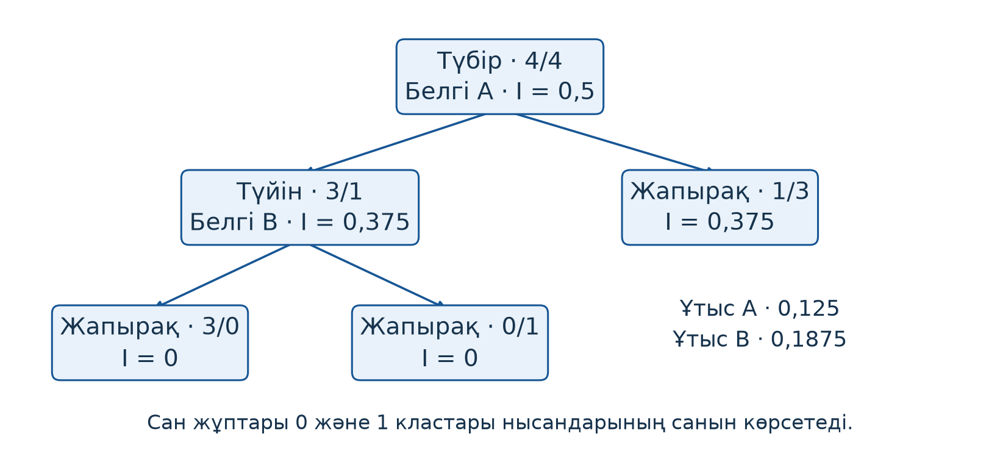
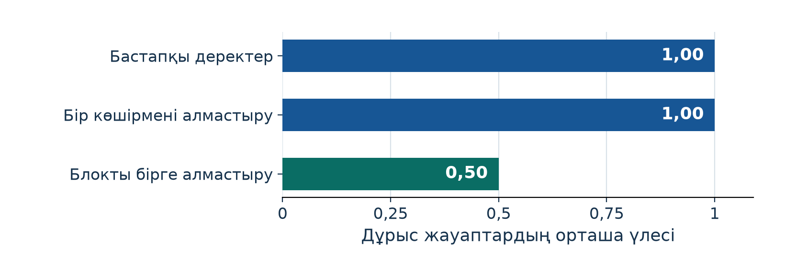
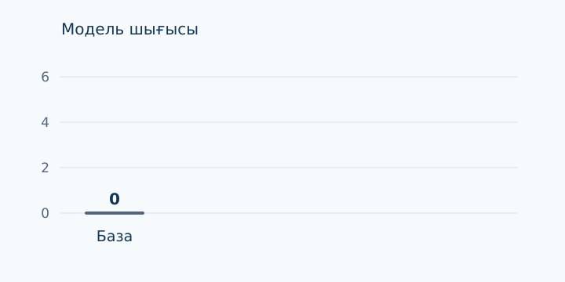
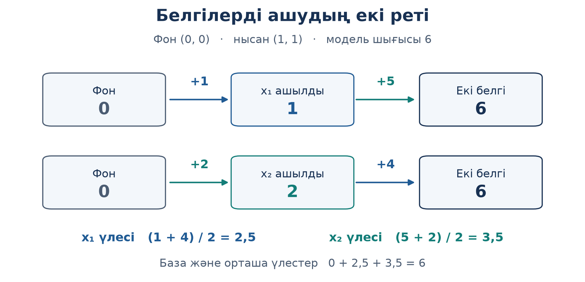
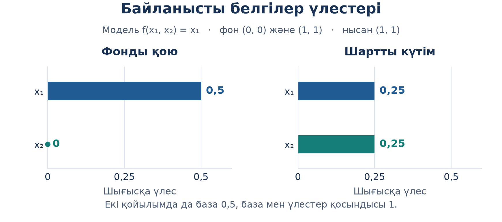
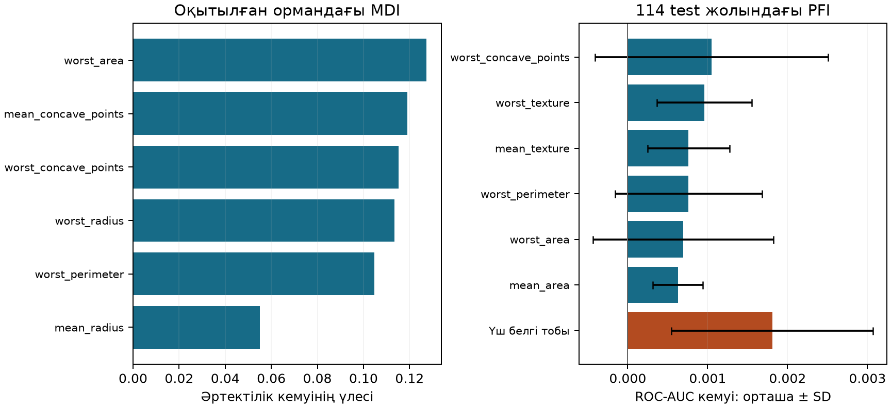
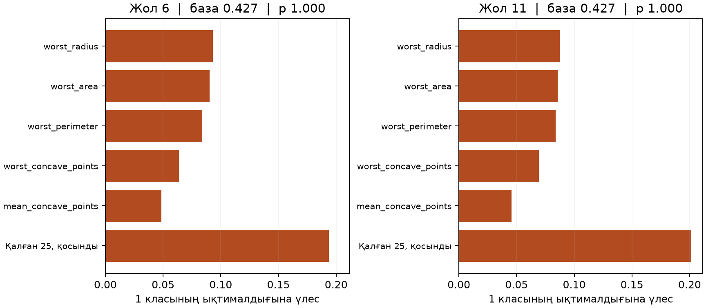

10-тарау. Машиналық оқыту модельдерінің интерпретациялануы және түсіндірілетіндігі
10.1 Тақырып бағдары
Ақауды анықтайтын екі жіктеуіш бірдей ROC-AUC береді. Біріншісі негізінен бөлшектің өлшенген параметрлеріне, екіншісі партия нөміріне сүйенеді. Қазіргі деректерде партия нөмірі жақсы предиктор болуы мүмкін, өйткені әр партияға өзіндік өндіріс режимі бекітілген. Жеткізуші ауысқанда бұл байланыс жойылуы ықтимал. Осы модельдерді ажырату үшін инженерге болжамдарға қандай кірістер әсер ететіні және мұндай қорытындылардың қаншалықты орнықты екені туралы мәлімет қажет. Жеке бөлшек үшін басқа жауап керек. Таңдалған бағдарға қатысты оның модельдік бағасын қандай мәндер ығыстырғанын түсіну қажет.
Тараудың мақсаты — түсіндіру туралы сұрақ қоюды, маңыздылықты өлшеу тәсілін таңдауды және оның нәтижесін тексеруді үйрену. Тарауды меңгергеннен кейін студент ағаштағы әртектіліктің азаюын есептей алады, кейінге қалдырылған деректерде алмастыру арқылы тексеру жүргізеді, берілген шкаладағы SHAP (SHapley Additive exPlanations) жергілікті түсіндірмесін талдайды және әдістер арасындағы алшақтықты түсіндіреді. Зертханалық жұмыста үш әдіс те бір кездейсоқ орманға қолданылады. Бұл түсіндіру тәсілдерінің айырмашылықтарын оқытылған модельдердің айырмашылықтарынан бөлуге мүмкіндік береді.
Пререквизиттер — 2-тараудағы белгілер мен түрлендірулер, 3–4-тараулардағы логистикалық регрессия мен ағаштар, 5-тараудағы метрикалар мен кейінге қалдырылған жиындар, 7-тараудағы гиперпараметрлерді іріктеу және 9-тараудағы кездейсоқ орман. Негізгі ұғымдар — жергілікті және жаһандық түсіндіру (local and global explanation), түйін әртектілігі (node impurity), алмастыру маңыздылығы (permutation feature importance), фондық жиын (background sample), белгі үлесі (feature contribution), аддитивтілік (additivity) және ранжирлеу орнықтылығы.
10.2 Түсіндіру туралы сұрақты қалай қою керек
10.2.1 Модель, бақылау және масштаб
Модельдің интерпретациялануы (interpretability) адамның болжам құрылымын және оның құрамдастарының мағынасын қаншалықты қадағалай алатынына байланысты. Шағын ағаштың тармақтарымен жүріп, бақылаудың нақты жапыраққа неге түскенін көруге болады. Өзара әрекеттесуі жоқ сызықтық регрессияда қалған кірістер бекітілгенде бір сандық кіріс өзгерісінің үлесі коэффициент арқылы өрнектеледі. Сандар өлшем бірліктері мен түрлендірулерге тәуелді. Сондықтан тіпті түсінікті ереже үшін де модельге ненің, қандай бірліктермен және қай сәтте берілетінін білу қажет.
Осы тарауда түсіндірілетіндік (explainability) оқытылып қойған модельді талдау әдістерін де қамтиды. Жүздеген ағаштан тұратын орманда әр ереже қолжетімді болғанымен, барлық жолды талдау ансамбльдің әрекеті туралы сұраққа сирек жауап береді. Әртектіліктің азаю қорытындысы ағаштар құрылымын сипаттайды. Алмастыру таңдалған метриканың кіріс байланыстары бұзылуына сезімталдығын көрсетеді. SHAP бір болжамның фондық деңгейден ауытқуын белгілер арасында бөледі. Жауап беру үшін зерттеу нысаны сәйкес болуы керек: құрылым, жиындағы сапа немесе жолдың шығысы.
Жергілікті сұрақ бір жол мен бір шығысты бекітеді. Мысалы, кірістердің бағалары фондық болжаммен салыстырғанда оң класс ықтималдығын қаншалықты ығыстырды. Жаһандық сұрақ жиынды немесе жиынтықты бекітеді. Мысалы, тексеру бөлшектерінде ақаулы өнімді жарамды өнімнен жоғары ранжирлеу қабілеті қандай кірістерге тәуелді. Жергілікті түсіндірмелердің орташа мәні жаһандық қорытынды бере алады, алайда оның мағынасын жолдарды таңдау және орташалау тәсілі анықтайды. Бұйымдардың саны аз тобына жеке қорытынды қажет болуы мүмкін.
10.2.2 Есептеулерге дейін
Өңдеу конвейерінің нұсқасын, бақылау бірлігін және шығысты бекітіңіз. Жіктеу моделінің бір шығысы мүмкіндік қатынасының логарифмі (log-odds), екіншісі оң класс ықтималдығы, үшіншісі шектен кейінгі белгі болуы мүмкін. Қателерді талдағанда метриканы және ол шекке тәуелді болса, шектің өзін бөлек көрсетіңіз. Өндірістік дабылды түсіндіру үшін белгі дабыл қалыптасатын сәтте қолжетімді екенін де тексеріңіз. «Инспекция қорытындысы» өрісінің жоғары үлесі деректердің ағып кетуін көрсетуі мүмкін. Оны өрістің пайда болу уақыты мен жиынды қалыптастыру ережелері арқылы растайды.
Нәтиже кімге қажет екенін анықтаңыз. Әзірлеушіге күмәнді баған, үдеріс иесіне модель жиі қателесетін жағдайлар тізімі, операторға түсінікті шкаладағы бірнеше үлес қажет болуы мүмкін. Есепте туынды бағандарды топтау тәсілін көрсетіңіз. Бірлік кодтаудан (one-hot encoding) кейін бастапқы санатқа бірнеше индикатор сәйкес келеді. Бір индикаторды бөлек араластыру екі белсенді мәні бар немесе белсенді мәні жоқ жолды тудыруы мүмкін. Бастапқы бағанды түрлендіруден бұрын алмастыру немесе блокты бірге алмастыру жарамды кодты сақтайды.
10.1-кесте. Әр әдіс қандай сұрақ қояды
| Әдіс | Талдау бірлігі | Шама және шкала | Негізгі тексеру |
|---|---|---|---|
| Әртектіліктің азаюы, MDI (mean decrease in impurity) | Оқытылған ағаштың немесе орманның ішкі түйіндері | Нормаланған жинақталған ұтыс | Критерий, салмақтар, бөлінулерді іздеу ығысуы |
| Алмастыру маңыздылығы, PFI | Бекітілген модель және бағалау жиыны | Араластыру кезіндегі метриканың кемуі | Метрика, жиын, қайталаулар және бағандар тәуелділігі |
| SHAP | Жол, модель шығысы және бүркемелеу ережесі (masking rule) | Түсіндірілетін шығыс бірліктеріндегі таңбалы үлес | Фондық деңгей, класс, аддитивтілік және фон |
Кесте нәтижені өлшем бірліктерімен тұжырымдауға көмектеседі. Мысалы, алмастырудан кейін ROC-AUC шамасының 0,08-ге кемуі және ықтималдыққа +0,08 жергілікті үлес әртүрлі амалдарды сипаттайды. Бірінші сан әртүрлі кластағы нысан жұптары бағаларының ретінен алынған. Екіншісі бір жол болжамының жіктелуіндегі сегіз пайыздық тармаққа ығысуды білдіреді. Әдістерді салыстыру үшін белгілердің ретін зерттеп, алшақтық себептері туралы гипотезаларды тексеруге болады.
10.3 Ағаштардағы белгілердің кіріктірілген маңыздылығы
10.3.1 Түйіндегі әртектіліктің өзгеруі
Ағаш алгоритмі бақылауларды біртектілеу топтарға бөлу үшін белгі мен шекті іріктейді. Жіктеуде Джини критерийі (Gini criterion) бар ағаш t түйініндегі класс үлестерін пайдаланады. Егер бақылаулар салмақталған болса, бұл үлестер салмақтар бойынша есептеледі. K класс болғанда мынаны аламыз
Екілік жағдайда үлестер тең болса, I=0,5. Барлық бақылаулар бір класқа жатса, I=0. Квадраттық қате критерийі бар регрессияда әртектілік жауаптардың түйін орташа мәні айналасындағы салмақталған шашырауына сәйкес келеді. Бір модель түйіндерін салыстыру үшін олардың қамтуын ескеру маңызды. — түбір салмағы, — түйін салмағы, ал және — қосындысы -ге тең екі ұрпақтың салмақтары болсын. Түбір салмағына келтірілген бөліну үлесі мынаған тең
көбейткіші бөліну қамтитын ағаш массасының үлесін ескереді. Түйін аз бақылауды қамтыса, тіпті таза жаңа жапырақтардың үлесі де аз болуы мүмкін. Ұтыстар бір белгі пайдаланылған барлық түйін бойынша қосылады. Содан кейін оларды әдетте барлық белгілердің ұтыстары қосындысына бөледі. Егер ағаш мүлде бөлінбесе, ол үшін нөлдік маңыздылықтар қайтарылады. scikit-learn кездейсоқ орманында бөлінулері бар ағаштар бойынша орташа маңыздылық алынып, нөлдік емес вектор қайта нормаланады. feature_importances_ атауы осы іске асыруға қатысты. Басқа кітапханада мұндай атау бөлінулер санын немесе басқа көрсеткішті білдіруі мүмкін. RandomForestClassifier.
10.3.2 Бүкіл ағашқа арналған бір есептеу
10.1-есептік мысал. Екі ішкі түйін бойынша маңыздылық.
Түбірде сегіз жол бар, әр кластан төртеуден. A белгісі оларды құрамы 3/1 сол түйінге және құрамы 1/3 оң түйінге бөледі. Екі ұрпақта да . Түбір 0,5−0,375=0,125 ұтысын береді. Сол ұрпақта B белгісі бірінші кластың үш жолын және екінші кластың бір жолын таза жапырақтарға бөледі. Түбір масштабындағы ұтыс (4/8)·0,375=0,1875 шамасына тең. Оң ұрпақ әртектілігі 0,375 жапырақ болып қалады.

Дереккөз: 10.1-есептік мысал деректері бойынша авторлық сызба.
Ұтыстар қосындысы 0,3125-ке тең. Оны жапырақтар арқылы тексеруге болады: оң жапырақ үлесі (4/8)·0,375=0,1875, таза жапырақтар нөл береді, түбірмен айырма қайтадан 0,3125 болады. Нормалағанда A үшін 0,4 және B үшін 0,6 аламыз. B маңыздылығы құрылып қойған ағашқа қатысты. Одан B-ге тыйым салынған басқа ағаштың сапасын есептеу мүмкін емес.
10.3.3 Бөлінулерді таңдау ранжирлеуге әсер етеді
Әртектіліктің азаюы бойынша маңыздылық оқыту деректеріндегі бөлінулерді іздеу нәтижесін сипаттайды. Бірегей мәндері көп үздіксіз бағанда әдетте екілік бағанға қарағанда рұқсат етілетін шектер көбірек. Тіпті шу бағанында да көптеген үміткердің ең жақсысы кейде жауаптарды кездейсоқ бөледі. Жаңа жолдарда сигнал жойылғанымен, үлес жинақталуы мүмкін. Шағын жапырақтары бар терең ағаш мұндай іріктеуге көбірек мүмкіндік береді. MDI-ді кейінге қалдырылған жиындағы алмастырумен салыстыру осы алшақтықты анықтауға көмектеседі. Кездейсоқ орман көрсеткіштерінің ығысуын зерттеу.
Белгілер тығыз байланысса, біреуі жоғарғы түйінге түсуі, ал екіншісіне қосымша ұтыс енгізуге аз мүмкіндік қалуы мүмкін. Кездейсоқ орманда қолжетімді белгілер таңдауы түйіндер арасында әртүрлі болады. Сондықтан ұқсас бағандар кейде әртүрлі ағашта маңыздылық алады, бірақ нақты бағанның үлесі баптауларға, генераторға және оқыту жиынына тәуелді. Оқу аудиті үшін өзара алмастырылатын бағандар тобын тексеріп, жеке мәндерді бөлек көрсету пайдалы. Корреляцияланған белгілерге арналған scikit-learn мысалы.
10.4 Алмастыру маңыздылығы
10.4.1 Алмастыру нені бұзады
f моделі оқытылған, ал D — жауаптары белгілі бағалау жиыны болсын. Алдымен бастапқы сапасы есептеледі, мұнда үлкенірек мән жақсырақ нәтижені білдіреді. Содан кейін j белгісі таңдалып, оның мәндері жолдар арасында алмастырылады. Белгілер мен басқа барлық баған өз орнында қалады. Бағанда мәндер жиыны сақталады, бірақ олардың жолдарға сәйкестігі өзгереді. R қайталау үшін r алмастыруы бар жиынды арқылы белгілейік. Сапаның орташа кемуі мынаған тең
Әр қайталауда модель өзгермейді. Кішірек мәні жақсырақ болатын шығын үшін «кейінгі шығын минус бастапқы шығын» айырмасын қолданады немесе таңбасы қарама-қарсы сапа функциясын пайдаланады. Теріс маңыздылық нәтижелері сақталады. Кездейсоқ араластыруда, әсіресе шағын жиында, сапа кейде жақсарады. Шашырауды тексеріп, орнықты жақсаруды бөлек зерттеу қажет. Орнықсыз жиын, зиянды тәуелділік немесе метрика бағытының қатесі болуы мүмкін.
10.2-есептік мысал. Дәлдік дұрыс жауаптар үлесі ретінде алынғандағы алмастыру.
Төрт жауап 0, 0, 1, 1-ге тең, ал модель бір екілік бағаннан класс береді. Бастапқы жолдарда төрт жауаптың төртеуі де сәйкес келеді. Мәндердің берілген үш реті бойынша 0, 1, 0, 1, одан кейін 1, 1, 0, 0 және одан кейін 0, 0, 1, 1 тізбектері алынған. Дәлдіктер тиісінше 0,5, 0 және 1. Олардың орташа мәні 0,5, сондықтан өлшенген кему 0,5-ке тең. Үшінші қайталауда мәндер бастапқы ретпен сәйкес келген. Бұл — кездейсоқ алмастырудың рұқсат етілетін нәтижесі. Үш қайталаудың нәтижесі басқа жиын үшін өлшеу дәлдігін анықтамайды.
10.4.2 Метрика және қайталаулар шашырауы
ROC-AUC кластар арасындағы бағалар ретін бағалайды. Бекітілген шектегі accuracy соңғы белгілердің ауысуына жауап береді. Алмастыру ықтималдықтардың ретін едәуір өзгертіп, бірақ бағалардың көбін шектің бұрынғы жағында қалдыруы мүмкін. Онда осы метрикалар бойынша маңыздылықтар әртүрлі болады. Метрика зерттелетін сұрақты көрсетуі, ал бастапқы сапа мәні қасында берілуі керек. Егер бастапқы модель кластарды дерлік ажыратпаса, ROC-AUC бойынша аз маңыздылық бағанда пайдалы ақпараттың бар-жоғы туралы аз мәлімет береді.
— r қайталауындағы кему болсын. Алмастырулардың стандарттық ауытқуын, мысалы, scikit-learn қолданатын келісіммен (ddof=0) көрсетуге болады.
10.2-мысалда кемулер 0,5, 1 және 0, сондықтан стандарттық ауытқу , яғни шамамен 0,408 болады. Бұл шашырау бір модель мен бір жолдар жиынындағы араластыруларға қатысты. Деректер құрамы әсерінен болатын өзгергіштік үшін бақылау бірлігін ескеретін басқа бөлулер немесе қайта іріктеу қажет. Бүкіл рәсімнің орнықтылығы қажет болса, әр қайталауда модель де қайта оқытылады. Бір стандарттық ауытқу жолақтары осы тәжірибе ішіндегі шашырауды сипаттайды. Алмастыру маңыздылығы жөніндегі нұсқаулық.
10.4.3 Байланысты бағандар және бірге араластыру
Белгілері 0, 0, 1, 1 болатын төрт жолды қарастырайық. Үш кіріс баған — алмастыруға дейін белгімен сәйкес келетін екілік индикатордың бірдей көшірмелері. Модель көпшілік дауысын алады. Кез келген бір көшірмені алмастыру келісілген екі көшірмені қалдырады, сондықтан кез келген ретте accuracy 1 болып қалады. Бір ретті үш көшірменің бәріне бір мезгілде қолданғанда блок ішіндегі мәндер келісімділігін сақтайды, бірақ олардың белгілерге қатысты орны өзгереді. Рет бірқалыпты таңдалса, күтілетін accuracy 0,5-ке тең. Жеке белгілер арқылы түсіндіру модельдің блокқа бірлескен тәуелділігін өткізіп алады.

Дереккөз: оқу мысалындағы жолдардың 24 ретін дәл толық қарастыру.
Нақты деректерде жеке алмастыру да мәндердің сирек үйлесімдерін тудыруы мүмкін. Мысалы, радиус, периметр және ауданның геометриялық өлшемдері жиі байланысты. Тек ауданды өзгертсе, модель өлшеулерде дерлік кездеспейтін үйлесімді алады. Бүкіл блокқа арналған бір алмастыру оның ішкі үйлесімдерін сақтайды, алайда қалған белгілермен байланыс бәрібір бұзылады. Топтық маңыздылық — бөлек тәжірибенің нәтижесі. Оны есептеу үшін жеке мәндерді қосуға болмайды.
Шартты алмастыру (conditional permutation) бағанды салыстырмалы нысандар арасында өзгертеді немесе қалған кірістер бойынша шартты үлестірім бағасынан жаңа мәндер қалыптастырады. Бұл тәуелділіктердің бір бөлігін сақтай отырып, қосымша сигналды зерттеуге мүмкіндік береді. Мұндай жауап шартты модель сапасына немесе топтау ережесіне тәуелді. Панельдік және уақыттық деректер үшін араластыру өткеннің қолжетімділігін, нысанға тиістілігін және рұқсат етілетін блоктарды ескеруі керек. Жолдарды толық кездейсоқ араластыру есептің өз құрылымын өзгертуі мүмкін. Кездейсоқ орманның шартты маңыздылығы, сапаның белгілерге тәуелділігі.
10.4.4 Диагностика мен іріктеу айырмашылығы
test жиынындағы алмастыру алдын ала бекітілген модельдің сипаттамасы ретінде рұқсат етіледі, егер оның нәтижесі кейіннен таңдау және сол жолдарда қайта бағалау үшін қолданылмаса. Маңыздылық бойынша бағанды алып тастаса, гиперпараметрлерді таңдаса немесе шекті қайта қараса, шешім әзірлеу деректерінде қабылданады. Жаңартылған модельді түпкілікті бағалау үшін әлі қолданылмаған жауаптар қажет. Датчиктен бас тартуға болатынын бағалау үшін датчигі бар және жоқ модельдерді бірдей фолдтар ішінде бөлек оқытып салыстырыңыз. Оқытылып қойған бір дананың PFI-і берілген алмастыру кезінде оның сапасы қаншалықты өзгеретініне жауап береді.
10.5 Шепли мәндері және SHAP
10.5.1 Болжамнан белгілер ойынына
SHAP мәндері нақты нысан үшін модель шығысы мен базалық мәннің айырмасын бөледі. Әр үлестің таңбасы және таңдалған шығыстың өлшем бірлігі бар. Мысалы, энергия тұтыну болжамына оң үлес базаға қатысты түсіндірілетін тұтынуды арттырады, ал класс логитіне оң үлес мүмкіндік қатынасының логарифмін арттырады. Санды оқу үшін нысанды, модельді, шығысты және база құрылған ережені білу қажет.
Бір скалярлық шығысы бар оқытылған модельді қарастырайық. Бекітілген жолы үшін оның белгілерінің мәндерін кезекпен ашамыз. Барлық белгілер индекстерінің жиынын , олардың санын арқылы белгілейік. ішкі жиыны коалиция (coalition) деп аталады. Әр коалиция үшін саны беріледі; ол -тегі ашылған мәндер кезіндегі болжам туралы сұраққа жауап береді. Қалған белгілер алдын ала таңдалған ереже бойынша ескеріледі. Барлық белгі ашылса, .
Мұндай жасыру оқытылып қойған модельді түсіндіргенде орындалады. Егер модель он баған күтсе, -ті бағалау үшін әдетте он бағанға дейін лайықты толықтырулар кезіндегі оның шығысын алу немесе құрылымына арналған арнайы алгоритмді пайдалану керек. Әр бағандар жиынында жаңа модель оқыту предиктордың өзі өзгеретін басқа ойынды анықтайды. Сандық нөлді қою да мазмұндық негіздеуді қажет ететін нақты фон таңдауы болып табылады.
белгісінің үлесін қалған белгілердің бір коалициясында осы белгі бар және жоқ кездегі шығыстар айырмасы ретінде есептеуге болады. Айырма қандай мәндер ашылып қойғанына тәуелді. Шепли мәні (Shapley value) оны ашудың барлық реті бойынша орташалайды. Берілген
коалициясы
белгісінің алдында тұрғанда, оның қатысушыларының
алмастыруы және одан кейінгі белгілердің
алмастыруы бар.
-ға бөлу сәйкес реттер санын осы айырманың салмағына айналдырады.
Әр ретте көршілес коалициялардың айырмалары бос коалициядан толық коалицияға дейін қосылады. Аралық мәндер қысқарады. Сондықтан орташалаудан кейін де үлестер қосындысы шығыс пен база айырмасына тең. Таңдалған ойын үшін жергілікті аддитивті жіктеу алынады
Бұл қасиет түсіндірменің жергілікті дәлдігі (local accuracy) деп аталады. Ол модельдің нақты шығысын қалпына келтіруге қатысты. Модельдің өз қатесі бақыланған жауапқа қатысты бөлек бағаланады. Белгіні қосу кез келген коалицияның мәнін өзгертпесе, оның үлесі нөлге тең. Егер белгінің барлық коалициядағы өсімдері артса, сол салыстыру сызбасында оның Шепли мәні кемімейді, өйткені (10.5)-тегі салмақтар теріс емес. Lundberg және Lee еңбегінде бұл қасиеттер аддитивті түсіндірмелер класымен байланыстырылған. Lundberg және Lee, 2017.
Тең ықтималды алмастыруда белгі орынның бірінде болады және әр орынның ықтималдығы . Демек, оның алдындағы берілген өлшемді коалициялардың жалпы салмағы әрқашан -ге тең. Бірақ бір өлшемдегі коалициялар саны әдетте басқа өлшемдегі саннан өзгеше, сондықтан жеке ішкі жиындардың салмақтары әртүрлі. Жуықтау үшін бірнеше рет қана алынып, олардың толық траекториялары орташаланса да, қосынды теңгерімі сақталады. Бұл ретте белгілер арасындағы бөлу барлық рет бойынша орташа мәннен өзгеше болуы мүмкін. Қосындыны тексеру теңгерімді тексереді, ал әр үлесті бағалау дәлдігі есептеу алгоритміне де тәуелді.
10.5.2 Ашудың екі реті
Шепли мәндерінде үлесті екі ретпен есептеу
Екі белгі бірлесіп әсер еткенде, олардың болжамға қосқан үлесі белгілердің ашылу ретіне тәуелді болуы мүмкін.

Модель f(x₁,x₂)=x₁+2x₂+3x₁x₂. Түсіндірілетін нысан (1, 1), ал ашылмаған белгілердің мәндері (0, 0) фондық жолынан алынады. База — 0.
Барлық қадамның мәтіні
- Фондық болжам — Модель f(x₁,x₂)=x₁+2x₂+3x₁x₂. Түсіндірілетін нысан (1, 1), ал ашылмаған белгілердің мәндері (0, 0) фондық жолынан алынады. База — 0.
- Алдымен бірінші белгі — x₁ ашылғанда шығыс 0-ден 1-ге өседі. Одан кейін x₂ ашылғанда 1-ден 6-ға өседі. Осы реттегі үлестер 1 және 5.
- Алдымен екінші белгі — x₂ ашылғанда шығыс 0-ден 2-ге өседі. Одан кейін x₁ ашылғанда 2-ден 6-ға өседі. Осы реттегі үлестер 2 және 4.
- Орташа үлестер — x₁ үлесі (1+4)/2=2,5, x₂ үлесі (5+2)/2=3,5. Екі үлесті базаға қосқанда осы нысан үшін модельдің 6 мәні шығады.
Белгілердің өзара әрекеттесуі бар есептеу. функциясын алып, оның нүктесіндегі шығысын түсіндірейік. Фон бір жолынан тұрады. Ашылмаған координатаны осы жолдағы мәнімен алмастырамыз. Бос коалиция үшін 0 аламыз. Тек бірінші белгі ашылса, шығыс 1-ге тең. Тек екіншісі ашылса, шығыс 2-ге тең. Екі белгі де ашылғанда шығыс 6-ға тең.
«Бірінші, екінші» ретімен бірінші белгіні ашу , екіншісін ашу өсімін береді. Кері ретте екінші белгінің өсімі , біріншісінікі болады. Екі жағдайда да қосынды 6-ға тең, бірақ бөлу ретке тәуелді. Орташалау және береді. Таңдалған фонға қатысты осы нүктеде үшке тең өзара әрекеттесу үлесі тең бөлінген. 10.3-сурет екі ретті де және қорытынды үлестерді көрсетеді.

Дереккөз: ашудың екі реті үшін үлестердің авторлық есебі.
Толық болжам мен белгіні жасырғаннан кейінгі болжам арасындағы бір айырма тек осы белгі соңғы болып ашылатын жағдайға жауап берер еді. Бірінші белгі үшін бұл айырма 4 болады. Бірінші болып ашылғандағы айырма 1-ге тең. Белгі саны екеу болғандықтан, 2,5 мәні екі жағдайды да бірдей салмақпен пайдаланады. Белгілер көп болғанда реттер тең ықтималды. Жеке коалицияның салмағы оның өлшеміне тәуелді. Сондықтан барлық коалиция бойынша тең салмақтармен орташа алу жалпы жағдайда үлестің басқа бөлінуін береді.
10.5.3 Фон және байланысты белгілер
Фон түсіндірменің қандай жолдарға немесе үлестірімге қатысты құрылатынын анықтайды. Мысалы, ағымдағы ауысымдағы тұтынуды осы цехтың әдеттегі ауысымдарымен немесе барлық цех ауысымдарының жиынтығымен салыстыруға болады. Модель мен түсіндірілетін жол бірдей болғанда база мен жеке үлестер өзгереді. Таңдау сұраққа тәуелді. Бір нысаннан тұратын фон нақты салыстыру нүктесін береді. Жиыннан алынған фон бірнеше нысан бойынша орташа бағдарды және жасырын координаталардың мүмкін мәндерінің үлестірімін анықтайды.
фондық үлестірімнен алынған кездейсоқ жолды, ал
—
коалициясының толықтауышын белгілесін. Фонды қою кезінде ашылған координаталар
мәндерінде бекітіледі. Қалған координаталар фондық жолдан бірге алынып, модель шығысы орташаланады. Шартты күтімде жасырын координаталар белгілі
мәндерін ескеретін үлестірімнен алынады. Ықшамдық үшін индекстегі бекітілген
-ті түсіріп тастаймыз.
Бірінші жағдайда жасырын белгілер алынған фондық жол ішінде өзара тәуелділігін сақтайды. Қою кезінде олардың бекітілген бөлікпен байланысы үзіледі. Мысалы, бір бөлшектің екі өлшемінің бірін ауыстыру нақты өлшеуде сирек кездесетін үйлесім беруі мүмкін. Мұндай үйлесім модельдің рұқсат етілетін кірістер аймағына кірсе, модель бәрібір сан қайтарады. Түсіндірме оның берілген қою кезіндегі әрекетін көрсетеді. Шартты қойылым бақыланатын байланысты сақтайды, бірақ шартты үлестірімді бағалауды талап етеді. Үздіксіз шамалар үшін ақырлы кестеде бірнеше координата бойынша дәл сәйкестік әдетте қолжетімсіз. Онда нәтиже шартты күтімді бағалаудың таңдалған тәсіліне де тәуелді болады.
Ашылған және жасырын координаталар тәуелсіз болса, жасырын координаталардың шартты үлестірімі рұқсат етілетін ашылған мәндер үшін олардың фондық үлестірімімен сәйкес келеді. Мұндай жағдайда екі ереже берілген коалицияға бірдей мән береді. Тәуелділік болғанда олар қарапайым сызықтық функция үшін де алшақтауы мүмкін. Айырмашылықтың мағынасы бір-бірінің мәліметтерін қайталайтын белгілерде ерекше байқалады. Шартты тәсілде белгі мәні жасырын кіріс туралы ақпарат көзі бола алады. Фонды қоюда сол белгі шығысқа функция аргументінде шын мәнінде бекітілетін координата арқылы әсер етеді.
Байланысты белгілермен есептеу. Фондық жол тең ықтималдықпен немесе болсын. Барлық бақыланған жолда екі белгінің мәндері сәйкес келеді. моделі нүктесінде түсіндіріледі. Екі қойылымда да базалық мән 1/2, толық шығыс 1-ге тең. Фонды қою кезінде бірінші белгіні ашу 1 шығысын береді. Екінші белгіні ашу бірінші белгінің екі мүмкін мәні бойынша орташа мәнді 1/2 күйінде қалдырады. Сондықтан бірінші үлес 1/2-ге, ал екіншісі нөлге тең.
Шартты күтімде мәні 1 кез келген белгіні ашу фондық жолдың екенін анықтайды. Онда әр жеке коалицияның мәні 1 болады. Бірінші ашылған белгі 1/2 өсімін, екіншісі нөл береді. Орташалаудан кейін әрқайсысы үшін 1/4 аламыз. Бұл ойында екінші белгі деректердегі тәуелділіктің арқасында бірінші белгі туралы ақпарат береді. 1/4 шартты үлесі функцияның тек бірінші координатаны пайдалануымен үйлеседі. Екі жіктеу де базамен қосылғанда бірдей 1 шығысын береді. 10.4-сурет үлестерді салыстырады.

Дереккөз: тең ықтималды екі фондық жолға арналған авторлық есептеу.
Қойылымды таңдағанда үлестің қажетті мағынасын атау пайдалы. Фонды қою кірістердің берілген үйлесімдеріндегі бекітілген функцияның әрекеті туралы сұраққа жауап береді. Шартты күтім бақыланатын мәндер бойынша қолжетімді шығыс туралы ақпаратты бөледі. Мұндай есептеулерден пәндік саладағы әрекет салдары туралы қорытындыға өту үшін себептік қойылым және деректерді алу үдерісі туралы жорамалдар қажет. Janzing, Minorics және Bloebaum, 2020.
Ашу бірлігі де қойылыммен анықталады. Бір санаттық белгі бірнеше индикатормен берілсе, индикаторларды бөлек жасыру бастапқы санат үшін мүмкін емес үйлесім тудыруы мүмкін. Мұндай үйлесімдердің жарамдылығы маңызды болса, ойын қатысушысын бастапқы белгі деңгейінде анықтап, оны кодтауға дейін ауыстыруға және модельге сол түрлендіру нәтижесін беруге болады. Есептеуден кейін бастапқы айнымалыны түрлендірілген бағандардан жинағанда басқа есеп туындайды. Баған үлестерін жай қосу онда аддитивтілікті сақтайды, бірақ жеке бағандар бойынша бастапқы ойын өзгермейді.
10.5.4 TreeSHAP және TreeExplainer нұсқалары
(10.5)-ті тікелей есептеу белгілер саны артқанда экспоненциалды өсетін коалициялар санын ескеруді талап етеді. Ағаштар үшін жұмыстың бір бөлігін біріктіруге болады. Ағымдағы түйіннің белгісі ашылғанда, өту бағыты түсіндірілетін нысандағы осы белгі мәнімен анықталады. Белгі жасырылғанда тармақтар шығыстарының үлесі қабылданған фон ережесіне сай ескеріледі. Алгоритм әртүрлі өлшемді коалициялар салмақтарын жолдар бойымен тасымалдайды. Бұл әр ішкі жиынды ашық тізбелеусіз берілген ойын үшін Шепли мәндерін алуға мүмкіндік береді.
Бастапқы TreeSHAP сызбасы үшін авторлар ағаштар саны, жапырақтар саны және тереңдік бойынша полиномдық есептеуді сипаттайды. Бір белгі бойынша қайта бөлінгенде ол ойынның бір қатысушысы болып қалады. Алгоритм жолдағы белгінің қайталануын ескереді. Ансамбльдің аддитивті шығысы үшін жеке ағаштардың үлестерін, егер олар келісілген қойылымда есептелсе, қосуға болады. Мұндай дәлдік жасырын белгілерді бағалаудың белгілі бір тәсіліне қатысты. Сол ағаштардағы басқа ойын өз мәндерін береді. Lundberg, Erion және Lee, TreeSHAP.
Бастапқы алгоритмде ағаш үшін, олардың жапырақтары -ден және тереңдігі -ден аспағанда, бір нысанға еңбек сыйымдылығы көрсетілген. Ол осы аралау алгоритміне қатысты. Айқын берілген фонмен есептеулерде оның өлшемін де ескеру қажет. Уақытты салыстырғанда түсіндірілетін жолдар саны, ағаштар пішіні, таңдалған қойылым және кітапхана іске асыруы маңызды. Тіпті бір модельде екі жолды түсіндіру мен бүкіл жиынды түсіндіру әртүрлі жұмыс көлемін береді. Сондықтан есептеу бюджетін фон және түсіндірілетін жиынтық құрамымен бірге сипаттайды.
TreeExplainer ішінде feature_perturbation="interventional" режимі фондық деректермен бірге беріледі. Жасырын белгілерді бағалағанда осы жолдардағы мәндер қолданылады. Жолдар саны есептеу көлеміне, ал олардың құрамы интерпретацияға әсер етеді. Бірнеше нысанды салыстыру үшін бірдей фон мен бірдей шығысты сақтау орынды. Әртүрлі топтарға әртүрлі фон таңдалса, базалық мәндерді бөлек көрсетіп, әр топтағы үлестер қандай жиынтыққа қатысты есептелгенін түсіндіру керек.
tree_path_dependent режимі жеке фондық кестесіз жұмыс істей алады. Тармақтар үшін ол ағаш құрылымында сақталған өту жиіліктерін немесе салмақтарын пайдаланады. Кейбір іске асыруларда сақталған салмақтар бақылаулар салмағын немесе түйінді қамту статистикасын ескереді. Сондықтан олардың мағынасын нақты ағаш үшін тексеру қажет. Ереже оқытылған модельдің бөлінулеріне және әр ағаштағы жолға байланысты. Ол айқын көрсетілген фондық кестемен есептеуге қарағанда басқа база мен басқа мәндер беруі мүмкін. Кез келген байланысты белгілер үшін жол салмақтары бастапқы деректердің толық шартты үлестірімін анықтамайды.
Қазіргі TreeExplainer ішінде auto режимі фон берілсе interventional, ал фон болмаса tree_path_dependent таңдайды. Есепте нақты пайдаланылған режимді, кітапхана нұсқасын және фон құрамын жазған жөн. Әйтпесе дайындауы басқа бірдей шақыру жолы басқа сұраққа жауап беруі мүмкін. Егер модель кодтағышты немесе масштабтауды пайдаланса, түсіндірілетін кіріс осы модель кірісіне сәйкес болуы керек. Түрлендіруден кейінгі бағандар бастапқы белгілерден өзгеше болуы мүмкін, сондықтан олардың атаулары мен ретінің сәйкестігі сақталады. TreeExplainer құжаттамасы.
10.5.5 Модель шығысы және үлес бірліктері
Регрессия үшін шығыс көбіне мақсатты шаманың бірліктерімен өрнектеледі. Жіктеуде шығысты айқын таңдау қажет. Мысалы, екілік XGBoost үшін raw режимі әдетте логитті түсіндіреді, ал кейбір ағаш жіктеуіштерінде шығыс класс ықтималдықтарын білдіреді. Модельді білмей, raw сөзі бойынша бірлікті анықтау мүмкін емес. Шығыс бірнешеу болса, түсіндіру және қосындыны тексеру шығыстың бір координатасы мен оған сәйкес класс үшін орындалады.
Екілік есепте класс ықтималдықтары бір-бірін бірге дейін толықтырады. Екі ықтималдыққа да бірдей ашу ойыны қолданылса, әр коалицияның мәндері де бір-бірін бірге дейін толықтырады. Сондықтан екі класс үшін дәл үлестердің таңбалары қарама-қарсы, ал базалық мәндер қосындысы бірге тең. Класты ауыстыру таңбаны оқуды өзгертеді. Кластарды модель шығыстарының ретімен сәйкестендіріп, таңдалған координатаны сурет қасында көрсету керек.
логиті және
ықтималдығы бар екілік модельде
сигмоидасы үлестер қосындысын бастапқы ықтималдық шкаласына аударады. SHAP мәндері логит үшін есептелсе, қорытынды былай тексеріледі
Сигмоида бүкіл қосындыға қолданылады. Ол сызықтық емес, сондықтан ықтималдық үлестері шығысы үшін ойынды бөлек анықтауды талап етеді. Тіпті бірнеше фондық жолдағы ықтималдық базасы да осы жолдар ықтималдықтарын орташалау арқылы алынады. Жалпы жағдайда нәтиже орташа логит сигмоидасынан өзгеше болады.
Екі шкалада есептеу. функциясын нүктесі үшін фонымен алайық. Бос, бірінші жеке, екінші жеке және толық коалиция үшін логиттің төрт мәні −1, 1, −1,5 және 0,5-ке тең. Логит үлестері 2 және −0,5-ке тең. Қосындыны тексеру береді. Осы болжамның ықтималдығы шамамен 0,622459 болады.
Ықтималдық шкаласындағы ойын үшін төрт шығыстың әрқайсысына сигмоиданы қолданайық. Коалициялар мәндері шамамен 0,268941, 0,731059, 0,182426 және 0,622459 болады. Бірінші үлес 0,268941-ден 0,731059-ға және 0,182426-дан 0,622459-ға дейінгі екі өсімнің орташа мәніне тең. Екінші үлес осыған ұқсас 0,268941-ден 0,182426-ға және 0,731059-дан 0,622459-ға өтулерді орташалайды. Дөңгелектелмеген мәндермен есептеулер шамамен 0,451075 және −0,097558 береді. 0,268941 базасымен олардың қосындысы дөңгелектеу дәлдігімен 0,622459 береді. Бұл үлестердің бірлігі мүмкіндік қатынасының логарифмі емес, ықтималдық бірлігі болып табылады.
Басылған алты таңба бойынша база мен үлестер қосындысы 0,622458 болады. Соңғы таңбадағы айырма қосылғыштарды дөңгелектегенде пайда болады. Есепте ықтималдық шкаласындағы үлесті пайыздық тармақтармен көрсетуге болады. Бұл мысалда бірінші үлес шамамен 45,11 пайыздық тармақты құрайды. Бірліктерді осылай ауыстыру мәнді жүзге көбейтеді және таңбасын сақтайды. Ол жіктеудің бір қосылғышына қатысты, ал бүкіл нысан ықтималдығының базаға қатысты өзгерісі екі үлестен де құралады.
Қолдау көрсетілетін модель мен түсіндіргіш жұбы үшін model_output="probability" ықтималдықты, ал model_output="log_loss" жолдағы логарифмдік шығынды түсіндіруді таңдайды. Соңғы жағдайда шығынды есептеу үшін бақыланған белгі қажет және база оған тәуелді болуы мүмкін. Ағымдағы API ішінде бұл екі режим interventional үшін көзделген. Аддитивтілікті салыстырғанда бірдей жолдар, бір рет, бірдей класс және таңдалған шкала қолданылады. Алдымен база мен үлестер қосындысын осы шкаладағы модель шығысымен салыстырып, содан кейін жеке мәндерді интерпретациялайды. Шығыс шкаласы және аддитивтілік туралы құжаттама.
Бағдарламалық тексеруде қалпына келтірілген және бастапқы шығыстың айырмасы сандарды басып шығару үшін дөңгелектеуге дейін есептеледі. Жылжымалы нүктелі арифметика салдарынан шағын алшақтық болуы мүмкін. Сондықтан салыстыру шығыс масштабына сай, алдын ала көрсетілген рұқсатпен орындалады. Алшақтық рұқсаттан асса, класс, массив пішіні және түсіндірілген шығыстың қосынды салыстырылатын шығысқа сәйкестігі тексеріледі.
10.5.6 Бір түсіндірмеден жиынға
Бірнеше нысан бойынша шолу үшін бір түсіндірілетін жиынтықтың әр жолында әр белгінің үлесі есептеледі. Белгінің қатысуының орташа шамасы қажет болса, абсолют үлестердің орташа мәні қолданылады. Базаға қатысты ығысудың орташа бағыты қызықтырса, таңбалы мәндер орташаланады. Түсіндірілетін нысан үшін екі көрсеткішті де жазайық
Белгі кейбір жолдарда шығысты арттырып, басқаларында кеміте алады. Онда таңбалы орташа мән нөлге жақындайды, алайда үлестің орташа шамасы елеулі. бойынша бағандық қорытынды осы жиындағы ығысудың әдеттегі шамасы туралы сұраққа жауап береді. Таңбаны, шашырауды және жеке нысан топтарын көру үшін үлестер үлестірімін немесе шашырау диаграммасын қарастырған пайдалы. Үлкен орташа үлес таңдалған фон мен масштабта белгінің болжамдардағы белсенділігін көрсетеді. Осы белгіні алып тастағаннан кейінгі модель сапасы қайта оқытуы бар бөлек тәжірибемен тексеріледі.
Орташа модуль бойынша ранжирлеу дәл қарастырылатын жолдарды сипаттайды. Үлкен үлес сирек жұмыс режимінде туындаса, жалпы орташа модуль шағын болып қалуы мүмкін. Осы режимді талдау үшін жеке қорытынды есептеп, оның көлемін көрсетуге болады. Орташа модуль шамасы таңбаны да анықтамайды. Белгі шығысты қашан арттырады деген сұрақ үшін сол жолдардағы таңбалы үлестер мен белгі мәндері қажет. Екі белгі байланысты болса, мұндай диаграммадағы бақыланатын тәуелділік өздігінен олардың қайсысы екіншісіне әсер ететінін анықтамайды.
Бір бастапқы айнымалының бірнеше түрлендірілген бағанын топтағанда әр нысан үшін олардың таңбалы үлестерін қосуға болады. Мұндай қосынды жіктеудің жалпы теңгерімін сақтайды. Одан кейін оны жолдар бойынша агрегаттауға болады. Жеке бағандардың орташа абсолют үлестерінің қосындысы жалпы алғанда олардың қосындысының орташа модулінен өзгеше, өйткені жол ішінде таңбалар бірін-бірі өтеуі мүмкін. Бүкіл топты бастапқыдан ойынның бір қатысушысы деп жариялап, Шепли мәндерін қайта есептесе, онымен қалған белгілер арасындағы өзара әрекеттесулердің бөлінуі өзгеруі мүмкін. Сондықтан есепте топ үлесінің қандай тәсілмен алынғаны көрсетіледі.
Түсіндірмелерді салыстыру үшін модель нұсқасы, класс немесе шығыс, дайындау тәсілі, фон, жасыру тәсілі және түсіндірілетін жиын сипаттамасы сақталады. Әртүрлі жиынтықтардағы абсолют үлестердің орташа мәні жай ғана нысандар құрамына байланысты өзгеше болуы мүмкін. Ортақ фоны бар екі топты салыстыру бір есептеу нүктесінде үлес үлестірімдерінің қай жерде өзгеретінін көруге көмектеседі. Түсіндірмелер белгілерді өзгерту немесе модельді баптау үшін қолданылса, түпкілікті сапа бекітілген хаттама бойынша бөлек бағаланады. Нәтижені сипаттағанда нақты жол үшін не есептелгенін, жиын бойынша не орташаланғанын және болжам сапасы ретінде не тексерілгенін ажыратыңыз.
Зертханалық жұмыста scikit-learn 1.9.1 ішіндегі RandomForestClassifier моделі SHAP 0.54.1 ішіндегі TreeExplainer арқылы түсіндіріледі. Фонды қою және ықтималдық шкаласы қолданылады. Фон train жиынының 64 жолынан тұрады, ал кейінге қалдырылған екі мысал ең кіші row_id мәндерінің алдын ала берілген ережесі бойынша таңдалады. Мұндай таңдау жергілікті жіктеудің қайталанымды иллюстрацияларын береді. Әр жол үшін база, таңбалы үлестер және бір кластың ықтималдығы бөлек салыстырылады. Жиындағы орташа үлестер туралы қорытынды бүкіл мәлімделген жиынтық үшін есептеуді талап етеді.
10.6 Түсіндірмелерді қалай салыстыру және тексеру керек
10.6.1 Бір нысан, үш тұжырым
Орманнан диаметр өлшемінің жоғары маңыздылығы алынған. Бұл оқытылған ағаштардағы диаметр бойынша бөлінулер жиынтығында ұтыстың елеулі үлесін бергенін білдіреді. Диаметрді араластырғаннан кейін тексерудегі ROC-AUC дерлік өзгермеуі мүмкін. Модель ұқсас ақпаратты қамтитын периметрге сүйенуі немесе оның болжамдары кластар реті елеулі өзгермей-ақ өзгеруі мүмкін. Нақты бөлшекте диаметр үлкен оң SHAP үлесін алуы мүмкін. Берілген фон мен бүркемелеу ережесінде диаметр үлесі фондық болжамнан ауытқуды жіктеуде оң қосылғыш болды. Басқа үлестер осы үлесті өтеуі мүмкін. Үш тұжырым да бір мезгілде орындала алады.
Әдістер бірінші белгі бойынша келіскенде де тексеру хаттамадан басталады. Мән ағымдағы test ішінде қайталанатын деректер жинау ерекшелігімен байланысты болуы мүмкін. Рангтер алшақтаса, қандай тұжырымды негіздегіңіз келгенін тексеріңіз. MDI бағаны тексеруге тасымалданбайтын жиі оқыту бөлінулерін көрсетуі мүмкін. Алмастыру нақты модель үшін кірісті жасанды өзгерту нәтижесін көрсетеді. SHAP үлесі берілген шығысқа, фонға және бақылауға қатысты. Әр өлшем үшін оның шарты мен шкаласы көрсетілген бір сөйлемнен жариялаңыз.
Екі жіктеуіш төрт бұйымды бірдей ранжирлейді делік. Біріншісі 0,10, 0,20, 0,60, 0,80, екіншісі 0,01, 0,04, 0,36, 0,64 ықтималдықтарын береді. Екінші қатар біріншіні квадраттау арқылы алынған; бұл нөлден бірге дейінгі аралықта монотонды. Берілген белгілер үшін ROC-AUC өзгермейді. Мұндай түрлендіру барлық бастапқы және араластырылған бағаға қолданылса, ROC-AUC бойынша PFI де өзгермейді. Алайда ықтималдықтар айырмалары өзгереді. Бастапқы бағасы 0,80 бұйым және бағалары 0,10 мен 0,20 екі нысаннан тұратын фон үшін фондық орташа мән 0,15, айырма 0,65 болады. Квадраттық түрлендіруден кейін фон (0,01+0,04)/2=0,025, айырма 0,615 болады. Жаңа шкаладағы кез келген аддитивті түсіндірменің үлестері жаңа айырмаға қосылуы керек. Мысал рангтер ұқсастығы ықтималдықтар мен олардың түсіндірмелерінің сапасын неге тексермейтінін көрсетеді.
10.6.2 Үлес таңбасынан модель әрекетіне
Бір нысан үшін +0,12 үлесі түсіндірме анықтаған үлестірімге қатысты шығыстың жоғары ығысуын білдіреді. Басқа жол үшін қайта есептегенде таңба теріс болуы мүмкін. Таңба өздігінен бастапқы нысанның белгі мәнін аздап арттырғанда не болатынына жауап бермейді. Ағашта шектердің бір аралығындағы өзгеріс кейде болжамды бұрынғы күйінде қалдырады. Кірісті өзгерткендегі әрекетке жауап беру үшін рұқсат етілетін мәндер жиынының болжам профилін құруға болады. Жеке ICE профилі (individual conditional expectation) бір жолдың қалған кірістерін бекітеді, ал ішінара тәуелділік PDP (partial dependence plot) таңдалған жолдар бойынша профильді орташалайды. Бұл графиктер де қойылған үйлесімдердің шынайылығын тексеруді талап етеді. PDP және ICE құжаттамасы.
Мысалы, энергия тұтынуды қайта болжағанда талдаушы тек жүктемені 40-тан 80 пайызға дейін өзгертеді. Жарамды күйдегі стенд үшін модель бағасын 3 кВт·ч-қа, басқа салқындату режимі бар стенд үшін 9 кВт·ч-қа арттырады. Екі стендтегі орташа арту 6 кВт·ч болады. Ол режимдер айырмасын жасырады. Екінші режимде 80 пайыз жүктемеге техникалық түрде жету мүмкін болмаса, бұл профиль есептеу моделінің рұқсат етілетін режимнен тыс реакциясын көрсетеді. Шектеулерді нақтылап, мүмкін шектерде профильдер құрыңыз. Режимді өзгерту туралы шешімге дейін жабдық құрылымын ескеріп, нақты әсерді тексеру қажет.
Екі жолдағы шамасы 0,12 қарама-қарсы екі үлес нөлдік таңбалы орташа және 0,12 орташа модуль береді. Бірінші қорытынды орташа бағыт, екіншісі бағытқа тәуелсіз ығысу шамасы туралы сұраққа жауап береді. Үлестері ірі шағын топ болғанда топтар бойынша үлестер үлестірімін және жиын көлемдерін көрсеткен жөн. Модельдің шеткі жағдайларды қалай өңдейтінін тексеруге бір орташа мән жеткіліксіз.
10.6.3 Түсіндіру және сапаны бақылау
Тексеру мәнмәтінін сақтаңыз. MDI үшін модель құрылымын, критерийді, тереңдік параметрлерін және жапырақтың ең аз өлшемін көрсетіңіз. PFI үшін жолдарды, метриканы, бастапқы сапаны және алмастырулар санын көрсетіңіз. SHAP үшін шығысты, класты, фонды, массив пішінін, таңдалған жолдарды және қалпына келтірудің ең үлкен қатесін жазыңыз. Алдын ала өңдеу болса, кіріс және түрлендірілген бағандар атауларының сәйкестігін сақтаңыз. Бағандар ретінің қатесі тіпті бағандар саны дұрыс болса да түсіндірмені бұзуы мүмкін.
Қойылған сұраққа жауапты өзгертетін факторлар бойынша орнықтылықты тексеріңіз. PFI басқа генератормен қайталанғанда кездейсоқ алмастырулардың ықпалы бағаланады. Басқа бөлуде қайта оқытқанда бүкіл модельдік нәтиженің орнықтылығы бағаланады. SHAP ішінде фондық жиынды ауыстырғанда салыстыру нүктесі өзгереді, сондықтан үлестердің өзгеруі мазмұнды болуы мүмкін. Екі модельді салыстырғанда алдымен бір шығыс, жолдар жиыны және түсіндіру ережесі бекітіледі. Кезең ауысуын талдау үшін фон бұрынғы күйінде қала ма, әлде жаңартыла ма, бөлек келісіледі. Бірінші тәсіл біртұтас бағдармен салыстырады, екіншісі жаңа жұмыс жиынтығын ескереді.
Іс жүзінде белгілер тобы немесе бірнеше жоғарғы орын алдын ала бөлініп, олардың тәжірибелерде қаншалықты жиі қайталанатыны есептеледі. Іс жүзінде сапасы тең екі орман бір корреляцияланған топтан әртүрлі өлшемді таңдаса, оның топтық маңыздылығын салыстырмалы бөлулерде тексеріңіз. Топ деңгейіндегі бағалар жақын болса, оларды топ ішіндегі алшақтықпен бірге беріңіз. Жолдарды аздап ауыстырғаннан кейін жоғарғы белгі орнын күрт өзгертсе, бастапқы шамаларды, жиын өлшемдерін және рангтер аралығын берген пайдалы. Ранг бағалардың жақындығын жасырады. PFI мәндері 0,036 және 0,035 көршілес екі баған бір жол өзгергенде орын ауыстыруы мүмкін.
10.6.4 Әрекетті не негіздей алады
Болжам түсіндірмесі есептеу моделін және таңдалған тәжірибеде оның деректермен байланысын сипаттайды. Себептік тұжырым пәндік салаға араласу салдарына қатысты. Мысалы, жабдық істен шығуын болжауда «техникалық қолдауға өтінімдер санының» жоғары маңыздылығы өтінімдер басталып кеткен мәселелер салдарынан пайда болатынын білдіруі мүмкін. Тіркелген өтінімдер санын азайту істен шығуларды міндетті түрде азайтпайды. Әрекеттің нақты салдары болса, себептік тетік, араласудың рұқсаттылығы және басқа факторларды бақылау туралы мәлімет қажет. Оқу есебінде бақыланған үлесті, тетік туралы гипотезаны және оны тексеру тәсілін ажыратыңыз.
Әділдікті тексеру үшін қосымша кімдердің қателері, қандай метрика және қандай шек бойынша салыстырылатыны анықталады. Екі топта оң класс 10 реттен кездесіп, модель тиісінше 1 және 4 оң жағдайды өткізіп алды делік. Толықтық 0,9 және 0,6-ға тең. Топтық белгі кірістерде болмаса да, бұл сандар топ құрамын, көлемін және айырманың орнықтылығын тексеруге негіз береді. Прокси бағандар топ туралы ақпаратты тасымалдай алады. Маңыздылық картасы тексеру бағытын таңдауға көмектеседі, ал қателер жиіліктері мен хаттама оның нәтижесін ашады.
Зертханалық қорытындының пайдалы пішімі үш сөйлемнен тұрады. Алдымен модельді, жиынды және шкаланы атаңыз. Содан кейін шарттары көрсетілген сандық нәтижені беріңіз, мысалы «бекітілген орманда үш өлшемді бірге алмастырғаннан кейін ROC-AUC 30 қайталауда … шамасына төмендеді». Соңғы сөйлемде келесі диагностикалық тәжірибені, мысалы топты басқа партияда тексеруді немесе фолдтар ішінде конвейерлерді салыстыруды көрсетіңіз. Мұндай рет оқырманға өлшемді қайталауға және оны модельді өзгерту ұсынысынан ажыратуға мүмкіндік береді.
10.7 Python тіліндегі практикалық іске асырулар
10.7.1 Бір орман және талдаудың үш тәсілі
Екі тәжірибеде де Breast Cancer Wisconsin (Diagnostic) кестелік жиынында кездейсоқ орманның бір конфигурациясын зерттейміз. scikit-learn кіріктірілген көшірмесінен 569 жол және 30 сандық белгі пайдаланамыз. Бастапқы 0 белгісін оң 1 класы ретінде кодтаймыз (malignant=1). Алдыңғы тарау кестесінен wdbc_boosting.csv және CC BY 4.0 атрибуциясын қайта пайдаланамыз. Код кіріктірілген көшірмені желіге қосылмай аша алады. CSV қолжетімді болса, скрипт барлық 569 жолдың, бағандар ретінің, қайта кодталған белгілердің және бөлу өрістерінің сәйкестігін тексереді. WDBC жиыны және DOI 10.24432/C5DW2B, load_breast_cancer.
seed 2026 бар стратификацияланған 80/20 бөлу 455 train жолын және 114 test жолын қайталайды. Кіріс матрицасына тек өлшемдер кіреді, ал row_id, белгі және split өрісі қызметтік болып қалады. Орманда 200 ағаш, ең үлкен тереңдік 6, жапырақта кемінде 2 жол және max_features="sqrt" ережесі қолданылады. Оқыту seed 2026 арқылы бір ағында орындалады. Бұл баптаулар, белгілер тобы, фон таңдау ережелері және түсіндірілетін екі жол нөмірі есептеуге дейін бекітілген.
MDI оқытылған ағаштар бөлінулерімен байланысты әртектілік азаюларын қосып, нормаланған жаһандық үлестер береді. PFI сол орманды тест матрицасының өзгертілген көшірмесіне қайта қолданып, ROC-AUC орташа кемуін өлшейді. SHAP жеке нысан үшін орман функциясының мәнін таңдалған фонға қатысты жіктейді. Айырмашылықтар өлшеу қойылымдарын көрсетуі үшін бір модель мен бір оң класты сақтаймыз. Нәтижелер осы тәжірибені сипаттау үшін пайдаланылады. Орман баптаулары мен белгілер құрамы бағалауға дейін берілген күйінде қалады. Кездейсоқ орман параметрлері және MDI.
10.7.2 1-мысал. MDI және алмастыру маңыздылығы
Алдымен орманды оқытып, өзгертілмеген test жиынында ROC-AUC есептейміз. 1 класының бағасын classes_ бойынша predict_proba қажетті бағанынан аламыз. Содан кейін әр белгі үшін 2027 кездейсоқ күйімен 30 алмастыру жасаймыз. Бір қайталауда бір бағанның мәндері алмастырылады, белгілер орнында қалады. Бастапқы және өзгертілген ROC-AUC айырмасы осы қайталаудағы маңыздылық мәнін анықтайды. Бөлгіші 30 болатын 30 айырманың орташа мәні мен стандарттық ауытқуын береміз. Шашырау бекітілген модель мен test кезіндегі таңдалған алмастыруларды сипаттайды. Жаңа жиындар бойынша белгісіздікті бағалау үшін басқа хаттама қажет болар еді. permutation_importance API, scikit-learn нұсқаулығындағы алмастыру маңыздылығы.
Алдын ала таңдалған mean_radius, mean_perimeter, mean_area тобы үшін seed 2029 генераторымен қосымша 30 қайталау құрамыз. Бірдей жолдар реті үш бағанға да қолданылады. Мысалы, алмастырудан кейін бірінші жол оныншы бастапқы жолдың мәндерін алса, оған осы жолдың радиусы, периметрі және ауданы бірге өтеді. Алмастыру топ ішіндегі мәндер үйлесімін сақтап, оның белгімен және қалған белгілермен сәйкестігін өзгертеді. NumPy массивін бергенде pandas мәндерді орын бойынша тағайындайды. Бұл маңызды, өйткені бастапқы индекстері бар DataFrame тағайындау жолдарды индекс белгілері бойынша қайта туралауы мүмкін.
import numpy as np
import pandas as pd
from sklearn.datasets import load_breast_cancer
from sklearn.ensemble import RandomForestClassifier
from sklearn.inspection import permutation_importance
from sklearn.metrics import roc_auc_score
from sklearn.model_selection import train_test_split
from threadpoolctl import threadpool_limits
def auc_positive(model, X, y):
column = int(np.flatnonzero(model.classes_ == 1)[0])
return roc_auc_score(y, model.predict_proba(X)[:, column])
data = load_breast_cancer()
names = [name.replace(" ", "_") for name in data.feature_names]
X = pd.DataFrame(data.data, columns=names)
y = (data.target == 0).astype(int)
train, test = train_test_split(np.arange(len(y)), test_size=.2,
stratify=y, random_state=2026)
forest = RandomForestClassifier(n_estimators=200, max_depth=6,
min_samples_leaf=2, max_features="sqrt",
n_jobs=1, random_state=2026)
X_test, y_test = X.iloc[test], y[test]
group = ["mean_radius", "mean_perimeter", "mean_area"]
rng = np.random.default_rng(2029)
group_drops = []
with threadpool_limits(limits=1):
forest.fit(X.iloc[train], y[train])
baseline = auc_positive(forest, X_test, y_test)
pfi = permutation_importance(forest, X_test, y_test,
scoring=auc_positive, n_repeats=30,
random_state=2027, n_jobs=1)
for _ in range(30):
order = rng.permutation(len(test))
permuted = X_test.copy()
permuted[group] = X_test[group].iloc[order].to_numpy()
group_drops.append(baseline - auc_positive(forest, permuted, y_test))
scores = pd.DataFrame({"feature": names, "MDI": forest.feature_importances_,
"PFI_mean": pfi.importances_mean,
"PFI_sd": pfi.importances_std})
print("Тест ROC-AUC", baseline)
print(scores.nlargest(6, "PFI_mean").to_string(index=False))
print("Топтық PFI орташа мәні және SD", np.mean(group_drops), np.std(group_drops))
10.7.3 Жаһандық нәтижелерді қалай оқу керек
114 жолдағы бастапқы ROC-AUC 0,994378-ге тең. Кесте орташа PFI бойынша алғашқы алты белгіні, топтың қалған екі жеке белгісін және бірлескен нәтижені көрсетеді. Толық көрініс үшін Notebook барлық 30 жолды және бастапқы айырмаларды сақтайды. Барлық белгілер бойынша MDI қосындысы дөңгелектеу қатесімен бірге тең.
10.2-кесте. MDI және жеке әрі топтық алмастырулардан кейінгі ROC-AUC кемуі.
| Белгі немесе топ | MDI | Орташа PFI | Қайталаулар SD |
|---|---|---|---|
| worst_concave_points | 0,115224 | 0,001047 | 0,001457 |
worst_texture |
0,018750 | 0,000959 | 0,000594 |
mean_texture |
0,012057 | 0,000761 | 0,000513 |
worst_perimeter |
0,104737 | 0,000761 | 0,000920 |
worst_area |
0,127399 | 0,000694 | 0,001131 |
mean_area |
0,053863 | 0,000628 | 0,000312 |
mean_radius |
0,055137 | 0,000088 | 0,000307 |
mean_perimeter |
0,051035 | 0,000099 | 0,000285 |
| Үш белгі тобы | — | 0,001808 | 0,001263 |

Дереккөз: WDBC жиынындағы бекітілген кездейсоқ орман үшін авторлық есептеу. PFI кейінге қалдырылған 114 жолда есептелген.
worst_area MDI бойынша бірінші орында, ал жеке алмастырулар арасында ROC-AUC ең үлкен орташа кемуін worst_concave_points береді. worst_texture үшін MDI үлесі 0,02-ден аз, алайда оның жеке PFI мәні worst_area мәнінен жоғары. Рангтердің бұл көрінетін айырмашылығы ағаш құруда және алмастырылған жолдарды бағалауда әртүрлі шамалар есептелетінінен туындайды. Оң панельде көлденең кесінділер қайталаулардың ± бір стандарттық ауытқуын көрсетеді. Орташа мәндердің шағын айырмаларын осы шашыраумен бірге оқу керек.
train ішінде топтың үш бағанының жұптық корреляциялары 0,9861-ден 0,9979-ға дейінгі аралықта. Бірге алмастырғаннан кейінгі ROC-AUC орташа шығыны 0,001808. Ол үш жеке өзгерістің әрқайсысынан кейінгі шығыннан жоғары. Мұндай нәтиже осы модельде жақын кірістердің ішінара өзара алмастырылуымен үйлеседі. worst_concavity үшін орташа жеке PFI −0,000562-ге тең. Таңба орындалған алмастыруларда ROC-AUC аздап орташа өскенін білдіреді. Бұл нәтиже өздігінен орманның осы test жиынындағы әрекетін сипаттайды және бағанды алып тастау ережесін анықтамайды.
Бірінші топтық қайталауда row_id мәні 487 жол 254 жолдан үш мән алады. Қалған бағандар мен 487 жолдың жауабы сақталады. Осы ретті бүкіл test жиынына қолданғаннан кейін ROC-AUC 0,991071429, сондықтан кему 0,003306878 болады. Тест бөлігінде 72 теріс және 42 оң жол бар. Жұпты салыстырудың толық өзгерген бір нәтижесі ROC-AUC шамасын 1/3024, шамамен 0,000331-ге өзгертеді. Бірінші қайталаудың бақыланған айырмасы теңдіктердің ықтимал жарты үлестерін қоса алғанда жұптардың жиынтық салмағының осындай он бірлігіне сәйкес келеді.
MDI бағанын оқығанда үлестердің белгілер бойынша нормаланғанын ескеріңіз. Ағашта әр бөліну түйінге жеткен нысандар санын және еншілес түйіндермен салыстырғандағы критерий кемуін ескереді. Сондықтан жоғарғы түйіндерге жиі түсетін белгілер елеулі үлес жинауы мүмкін. Кірістер үлестірімінің пішіні, өзара алмастырылатын белгілердің болуы және ағаштарды құрғанда белгілердің кездейсоқ ішкі жиыны бұл азаюды қай белгінің алатынына әсер етеді.
PFI ROC-AUC бірліктерімен өрнектелген. Екі бағандағы тең MDI оларды алмастырғаннан кейін ROC-AUC әртүрлі шығындарына жол береді. Жеке алмастырудан кейін аз кему жақын алмастырғыштардың болуымен үйлеседі. Топта бірден үш баған өзгереді, сондықтан кему шамасы кірістердің бірге өзгеруіне жауап береді. Жеке PFI мәндерінің қосындысы жалпы жағдайда топтық маңыздылықты қалпына келтірмейді. Бірнеше бағанды өзгерту ансамбльге бір мезгілде әсер етеді, ал ROC-AUC жұптарды ранжирлеуді өлшейді және белгілер бойынша қосылмайды.
10.7.4 2-мысал. Бекітілген екі жол үшін SHAP
Екінші листинг сол fit амалын өздігінен қайталайды. Фон ретінде сұрыпталған бастапқы индекстерден seed 2028 генераторымен қайтарусыз таңдалған 64 train жолы алынады. Түсіндіруге бастапқы row_id мәндері ең кіші екі test жолын пайдаланамыз. Ереже индекске сүйенеді. Ол жағдайларды үлес таңбаларына, ықтималдық шамаларына және шынайы белгілерге тәуелсіз бекітеді.
TreeExplainer feature_perturbation="interventional" және model_output="probability" арқылы іске қосылады. Фон жоқ белгілер орташаланатын үлестірімді анықтайды, ал түсіндіру бірлігі — 1 класының ықтималдық шығысының мәні. Үлестер массивінің сәйкес қабатын classes_ арқылы таңдаймыз. Әр нысан үшін базалық деңгей мен 30 үлесті қосып, орман қайтарған ықтималдыққа жақындығын тексереміз. Осы ортада сандық диагностикадан кейін 10⁻⁵ абсолют рұқсатын қолданамыз. Базалық деңгейді фондық жолдардағы орманның орташа шығысымен 10⁻⁶ рұқсатпен бөлек салыстырамыз. TreeExplainer және шығыстар кеңістігі.
import numpy as np
import pandas as pd
import shap
from sklearn.datasets import load_breast_cancer
from sklearn.ensemble import RandomForestClassifier
from sklearn.model_selection import train_test_split
from threadpoolctl import threadpool_limits
data = load_breast_cancer()
names = [name.replace(" ", "_") for name in data.feature_names]
X = pd.DataFrame(data.data, columns=names)
y = (data.target == 0).astype(int)
train, test = train_test_split(np.arange(len(y)), test_size=.2,
stratify=y, random_state=2026)
forest = RandomForestClassifier(n_estimators=200, max_depth=6,
min_samples_leaf=2, max_features="sqrt",
n_jobs=1, random_state=2026)
rng = np.random.default_rng(2028)
background_ids = np.sort(rng.choice(np.sort(train), size=64, replace=False))
case_ids = np.sort(test)[:2]
background, cases = X.iloc[background_ids], X.iloc[case_ids]
with threadpool_limits(limits=1):
forest.fit(X.iloc[train], y[train])
column = int(np.flatnonzero(forest.classes_ == 1)[0])
explainer = shap.TreeExplainer(forest, data=background.to_numpy(),
feature_perturbation="interventional",
model_output="probability")
explanation = explainer(cases.to_numpy(), approximate=False)
probabilities = forest.predict_proba(cases)[:, column]
background_mean = forest.predict_proba(background)[:, column].mean()
class_count = len(forest.classes_)
assert explanation.values.shape == (len(cases), len(names), class_count)
assert explanation.base_values.shape == (len(cases), class_count)
values = explanation.values[:, :, column]
base_values = explanation.base_values[:, column]
sums = values.sum(axis=1)
reconstructed = base_values + sums
np.testing.assert_allclose(base_values, background_mean, atol=1e-6, rtol=0)
np.testing.assert_allclose(reconstructed, probabilities, atol=1e-5, rtol=0)
for row_id, base, total, model_p in zip(case_ids, base_values,
sums, probabilities):
print("row_id", row_id, "база", base, "SHAP қосындысы", total, "p", model_p)
10.7.5 Жергілікті түсіндірмелерді қалай оқу керек
Бекітілген ереже бойынша 6 және 11 жолдар алынды. 0,426708571 базалық мәні 64 фондық жолдағы орман шығысының орташа мәнімен 10⁻¹⁵-тен аз абсолют айырмамен сәйкес келеді. Екі жол үшін де predict_proba 1 қайтарады, бірақ үлестер жиындары әртүрлі. Мысалы, worst_radius үлесі 6 жол үшін 0,093122 және 11 жол үшін 0,087281, ал worst_concave_points үлесі тиісінше 0,063679 және 0,069196-ға тең.
10.3-кесте. Бекітілген екі жол үшін 1 класының ықтималдығын SHAP арқылы жіктеуді тексеру.
row_id |
База | Үлестер қосындысы | База + қосынды | Орман p | Абс. қате |
|---|---|---|---|---|---|
| 6 | 0,426708571 | 0,573287310 | 0,999995881 | 1,000000000 | 0,000004119 |
| 11 | 0,426708571 | 0,573287309 | 0,999995880 | 1,000000000 | 0,000004120 |

Дереккөз: WDBC жиынының алдын ала таңдалған кейінге қалдырылған екі жолы үшін TreeExplainer авторлық есебі.
10⁻⁶ рұқсатпен алғашқы іске қосу шамамен 4,12 × 10⁻⁶ алшақтықты анықтады. SHAP 0.54.1 диагностикасы SHAP ағаштарының ішкі болжамы мен орманның predict_proba нәтижесі 10⁻¹⁵-тен аз қатемен сәйкес келетінін растады. Бұл орманда raw және probability шығыстары тепе-тең түрлендіруді пайдаланады, ал интервенциялық қосындылар бірдей айырманы қайталады. Ықтималдық шкаласында тексергенде 10⁻⁵ рұқсаты оны ескереді. Модель параметрлері, фондық және түсіндірілген жолдар индекстері және үлестердің өздері сақталған. Дөңгелектелмеген нәтижелер мен диагностика журналы бөлек JSON файлдарына жазылған.
Оң үлес модель шығысын базаға қатысты арттырады, теріс үлес кемітеді. Мысалы, таңдалған кеңістіктегі +0,08 аддитивті жіктеуде сегіз пайыздық тармаққа сәйкес келеді. Барлық үлесті және базалық мәнді қосу қажет. Диаграммада модулі ең үлкен бес үлес бөлек көрсетілген. Қалған 25 үлес олардың таңбалы қосындысымен берілген. Сондықтан дөңгелектелмеген мәндер қолданылса, жалпы қорытындыны диаграмманың ірілендірілген топтары арқылы да қалпына келтіруге болады.
6 жол үшін көрсетілген бес белгінің қосындысы 0,379528254, ал қалғандарының қосындысы 0,193759056-ға тең. Бірге олар 0,573287310, яғни қосынды бағанындағы мәнді береді. Базаны қосқаннан кейін 0,999995881 аламыз. 11 жол үшін бес белгінің үлесі сәл аз және ол қалғандарының үлкенірек қосындысымен өтеледі. Бұл мысал суреттегі жолақтардың ұзындығын аддитивті тексерумен байланыстырып, неге бірдей ықтималдықтарда үлестер жиыны әртүрлі бола алатынын көрсетеді.
Интерпретация фонға, шығыс шкаласына және жетіспейтін белгілер туралы жорамалға тәуелді. Жақын белгілер үлесті өзара бөлсе, екі жол бір орманда әртүрлі түсіндірме алуы мүмкін. Нәтиже нақты жолдағы есептелген болжамға және таңдалған режимге қатысты. Қосындыны тексеру жіктеудің болжаммен келісімділігін анықтайды. Ол шығыстың калибрленуі немесе пәндік салаға араласу кезіндегі белгі әрекеті туралы ештеңе айтпайды.
10.8 №10 зертханалық жұмыс
Feature Importance, Permutation Importance және SHAP пайдаланып белгілер маңыздылығын талдау және модель нәтижелерін интерпретациялау.
Мақсат, деректер және орта
Мақсат — екі жаһандық өлшемді салыстыру және жеке модельдік болжамды түсіндіру. Жұмыс қорытындысында студент бекітілген бөлуді қайталайды, оң класс үшін ROC-AUC есептейді, MDI және PFI алады, бірге алмастыруды орындайды және SHAP жіктеуін сандық түрде тексереді.
Python, NumPy, pandas, scikit-learn, Matplotlib, threadpoolctl және SHAP қажет. Notebook үшін Python ядросы бар Jupyter қолданылады. Орта орнатылғаннан кейін кіріктірілген WDBC жүктеу және есептеулер жергілікті жұмыс істейді. Бастапқы жолдарды салыстыру үшін 9-тараудың CSV файлын және атрибуция үшін WDBC_Attribution.txt пайдаланыңыз. Орта нұсқалары мен орман параметрлері JSON файлына сақталады.
Он қадам
- WDBC жүктеп, қабылданған пішімде 30 бастапқы атауды сақтаңыз және оң класты бөліп алыңыз. CSV, белгілер және идентификаторларды салыстырыңыз.
- Стратификацияланған 455/114 бөлуді қайталаңыз. Ортақ индекстердің жоқтығын және екі бөліктегі класс жиіліктерін тексеріңіз.
- Бекітілген орманды 455 жолда оқытыңыз. Баптауларды және
classes_ретін жазыңыз. - Өзгертілмеген 114 test жолында 1 класының ықтималдықтары бойынша ROC-AUC есептеңіз.
- 30 MDI мәнін алып, олардың теріс емес екенін және дөңгелектеу рұқсатымен қосындысы бірге тең екенін тексеріңіз.
- Әр баған үшін ROC-AUC бойынша PFI есептеңіз. 30 айырманы, олардың орташа мәнін және стандарттық ауытқуын сақтаңыз.
- Алдын ала берілген үш белгіні топтық алмастырыңыз. Жолдағы үш мәннің бәрі бастапқы топтың бір жолынан алынғанына көз жеткізіңіз.
- Берілген ережелер бойынша train ішінен 64 фондық нысан және test ішінен түсіндірілетін екі нысан алыңыз.
row_idжазып, бөліктерге тиістілігін тексеріңіз. - Ықтималдық шкаласында SHAP есептеңіз. Әр жағдай үшін база, үлестер қосындысы және болжамды бөлек салыстырыңыз. 10.5 және 10.6-суреттерді құрыңыз.
- Әзірлеу деректерінде бір жеке нұсқаны орындап, есепке кестелерді, қорытындыны және қайталау файлдарын тіркеңіз.
Алты жеке нұсқа
Қосымша салыстыруларды train ішкі бөліктерінде орындаңыз. Іске қосуға дейін салыстыру ережелерін және ішкі бөліктердің рөлдерін бекітіңіз.
- Ортақ ішкі тексеруде 10 және 30 қайталаулы алмастыру бағаларын салыстырыңыз. Бір белгілер бойынша орташа мәндер мен шашырауларды салыстырыңыз.
- Бір модель және ішкі жиын үшін ROC-AUC және average precision бойынша PFI салыстырыңыз. Бағандар реті неге өзгеруі мүмкін екенін көрсетіңіз.
mean_radius,mean_perimeter,mean_areaжеке алмастыруларын олардың бірге алмастырылуымен салыстырыңыз. Әр қайталауда топ жолдарының бір ретін сақтаңыз.- Ішкі train ішінен алынған екі фондық жиында бір ішкі жағдай үшін SHAP салыстырыңыз. 32 және 64 өлшемдерін бекітіп, база мен үлестерді қайта есептеңіз.
- Ішкі оқытуға алдын ала берілген seed арқылы екі тәуелсіз шу белгісін қосыңыз. Ішкі тексеруде олардың MDI және PFI мәндерін салыстырыңыз.
- Ішкі тексерудегі бастапқы индекстері бойынша екі жағдайды таңдаңыз. Бес үлес пен қалғандарының қосындысын көрсету аддитивті тексеруді сақтайтынын тексеріңіз.
Есеп және жергілікті рубрика
Есепке жиынның шығу тегі мен атрибуциясын, бөліктер индекстерін, орман гиперпараметрлерін, базалық ROC-AUC, 10.2 және 10.3-кестелерді, 10.5 және 10.6-суреттерді және жеке нұсқаны қосыңыз. ROC-AUC кемуінің бір есебін және SHAP арқылы ықтималдықты қалпына келтірудің бір есебін көрсетіңіз. Рангтер алшақтағанда әр әдістің қандай сұрақ қоятынын түсіндіріңіз. Шығыстары бар Notebook пен бастапқы сандары бар JSON тіркеңіз. Кестелер үшін есептеуден кейін дөңгелектеңіз.
Жергілікті рубрика 100% құрайды. Деректер мен дұрыс бөлу 15%, бекітілген орман және ROC-AUC 15%, MDI және PFI 20%, топтық алмастыру 10%, SHAP және аддитивті тексеру 20%, интерпретация, нұсқа және қайталанымдылық 20% береді. Силлабус ЗЖ 10 үшін бөлек екі академиялық сағат және 7 ресми балл бөледі.
Бақылау сұрақтары
- ROC-AUC үшін ықтималдықтар бағаны қалай таңдалады?
- MDI үшін ағашта қандай шамалар қолданылады?
- Бір модельдің PFI мәні неге жиын мен метрикаға тәуелді?
- Бір бағанды алмастырғанда қандай мәндер орнында қалады?
- Топтық алмастыруда жолдардың ортақ реті нені сақтайды?
- Бір белгінің ROC-AUC аз кемуі неге топ үшін елеулі кемуге жол береді?
- Фондық жолдар қалай таңдалған және таңдауда қандай деректер қолжетімді?
model_output="probability"кезінде үлестер қандай бірліктермен өрнектелген?- Аддитивтілікті тексеру үшін қандай мәндер қосылады?
- Екі тәжірибенің бір орман конфигурациясына сәйкестігін қалай тексеруге болады?
10.9 Өзіндік жұмыс және есептер
Бақылау сұрақтары
- Бір бөлшектер жіктеуіші үшін жергілікті және жаһандық сұрақ тұжырымдаңыз. Әр сұраққа жауап беру үшін қандай деректер қажет?
- MDI есептегенде бөліну ұтысы неге түйін массасының үлесіне көбейтіледі? Бақылау салмақтары есептеуге қалай әсер етеді?
- Үздіксіз шу бағаны неге кейде жоғары кіріктірілген маңыздылық алады? Мұндай түсіндірмені кейінге қалдырылған жолдарда қалай тексеруге болады?
- Алмастыруда бағанның қандай қасиеттері сақталады және қандай байланыстар бұзылуы мүмкін? Қандай жағдайда блоктарды алмастыру қажет?
- Метрика мен шекті таңдау PFI-ге қалай әсер етеді? Бір қайталаудағы сапаның теріс кемуі нені білдіреді?
- Алмастырулар шашырауы жаңа деректердегі және модельді қайта оқытудағы өзгергіштіктен несімен ерекшеленеді?
- Шепли үлесін есептеу үшін қандай бастапқы шамалар қажет? Үлестер мен фондық деңгейдің қажетті класс пен шкалаға қатыстылығын қалай тексеруге болады?
- Байланысты кірістерде бүркемелеу ережесін таңдау неге үлестер таңбалары мен ретін өзгертуі мүмкін? Есепте фон туралы қандай мәлімет көрсету қажет?
- Жергілікті үлестердің орташа модулі олардың таңбалы орташа мәнінен несімен ерекшеленеді? Сирек ішкі топқа тән үлесті қалай көрсетуге болады?
- Болжамды түсіндіруден өндірістік үдерісті өзгерту туралы шешімге өту үшін не қажет? Түпкілікті бағалаудың тәуелсіздігін қалай сақтауға болады?
Есептер
1-есеп. Салмақталған әртектіліктің азаюы. Қолдану. Джини критерийі және бақылаулардың тең салмақтары бар ағаштың түбірінде екі кластың әрқайсысынан 6 нысан бар. A белгісі құрамы 5/1 және 1/5 түйіндер жасайды. Сол түйінде B белгісі жолдарды таза жапырақтарға бөледі. Оң түйін жапырақ болып қалады. Түбірдің екі ұрпағының әртектілігін, A бөлінуінің үлесін, B бөлінуінің үлесін және белгілердің нормаланған маңыздылықтарын табыңыз. Нормаланбаған үлестер қосындысын жапырақтар бойынша тексеріңіз. Салмақталған жолдарда есептеу тәсілінде не өзгеретінін түсіндіріңіз.
2-есеп. PFI және қайталанымдылық. Қолдану және талдау. Бастапқы ROC-AUC 0,88-ге тең. Бір белгіні алмастырғаннан кейінгі төрт мән 0,78, 0,80, 0,92 және 0,86 болды. (10.4) бойынша таңбалы кемулерді, орташа мәнді және стандарттық ауытқуды есептеңіз. Алынған шашырау қандай белгісіздікті қамтитынын түсіндіріңіз. Жиынды ауыстыруға және қайта оқытуға орнықтылықты тексеру үшін екі түрлі тәжірибе ұсыныңыз.
3-есеп. Екі белгінің жергілікті үлестері. Қолдану. Оң класс ықтималдығы түсіндіріледі. Коалициялар функциясының мәндері белгілерсіз 0,30, A белгілі болса 0,45, B белгілі болса 0,40 және екеуі де белгілі болса 0,70. Қосудың екі ретінде әр белгінің үлесін және орташа Шепли үлесін есептеңіз. Аддитивтілікті тексеріп, үлестерді пайыздық тармақтарға аударыңыз. Осы түсіндірмені сол нысан туралы басқа есеппен салыстыру үшін қандай мәлімет жетіспейді?
4-есеп. Байланысты өлшемдер тобы. Талдау. Модель сигналдың төрт екілік көшірмесін қабылдап, бірліктер саны кемінде үш болса 1 класын қайтарады. Тексеруде белгілері 0, 0, 1, 1 төрт жол бар, барлық көшірме белгіге тең. Алмастыру үшін жолдар реті барлық мүмкін реттен тең ықтималдықпен таңдалады. Бастапқы accuracy, бір көшірмені алмастырғаннан кейінгі және барлық төрт көшірмені бірге алмастырғаннан кейінгі күтілетін accuracy салыстырыңыз. Одан кейін one-hot кодтауынан соң бір санаттың үш индикаторын бірге араластырғанда қандай үйлесімдерге жол берілетінін сипаттаңыз. Блок маңыздылығы неге бөлек рәсіммен есептелетінін түсіндіріңіз.
5-есеп. Таңдалған шығысты тексеру. Талдау. Бір жол үшін модель кластары [0, 1], predict_proba нәтижесі [0.58, 0.42]. Екінші шығыс үшін SHAP 0,30 фонын және +0,13, −0,04, +0,03 үлестерін қайтарады. Талдаушы қосындыны 0 класының бірінші ықтималдықтар бағанымен салыстырып, 0,16 үйлеспеушілікті хабарлады. Шығыстарды дұрыс сәйкестендіріп, тексеруді қайталаңыз. SHAP мәндері логиттер шкаласында есептелген болса, тексеру ретін және сигмоиданың рөлін сипаттаңыз. Қосындыны тексеру не беретінін және қандай қасиеттерді тексермейтінін көрсетіңіз.
6-есеп. Модельді шығаруға дейінгі аудит. Бағалау. Орман жабдықты тексеру қажеттігін болжайды. «Тексеру қорытындысы» бағанында MDI жоғары, «бақылаушы нөмірінде» жергілікті үлес жоғары, ал ең үлкен топтық PFI үш температуралық арнада. Деректердің түсу уақытын, жаңа қондырғыларға тасымалдауды және бір арнаны алып тастау мүмкіндігін анықтау үшін тексерулер тізбегін сипаттаңыз. Күмәнді тәуелділікті анықтауды, белгілерді өзгерту шешімін және түпкілікті модельді бағалауды ажыратыңыз. Модельдің өлшенген әрекеті туралы бір тұжырым және әлі тексерілуі керек бір себептік гипотеза тұжырымдаңыз.
Рефлексия
Бір белгінің әртүрлі орнын көрсететін зертханалық жұмыстың екі нәтижесін алыңыз. Әр өлшемнің шамасы, бірліктері және шарттары туралы бір сөйлемнен жазыңыз. Одан кейін осы бағанды модельден алып тастаудың пайдасын бағалау үшін хаттамада не өзгеруі керектігін тұжырымдаңыз.
10.10 Глоссарий және өзін-өзі тексеру тесті
Шағын глоссарий
- Интерпретациялану — interpretability. Қойылған сұрақ үшін болжам құрылымы мен мағынасын қадағалау мүмкіндігі.
- Жергілікті түсіндіру — local explanation. Бір жол немесе шағын маңай үшін модель шығысын сипаттау.
- Жаһандық түсіндіру — global explanation. Берілген жиында немесе жиынтықта модель әрекетін не оның өлшемдерін жинақтап сипаттау.
- Түйін әртектілігі — node impurity. Түйіндегі кластар араласуының немесе жауаптар шашырауының критерийі.
- Әртектіліктің азаюы бойынша маңыздылық — mean decrease in impurity, MDI. Белгі бойынша бөлінулердің салмақталған ұтыстарының қорытындысы.
- Алмастыру маңыздылығы — permutation feature importance, PFI. Берілген араластырудағы бекітілген модель сапасының өзгеруі.
- Топтық алмастыру — grouped permutation. Таңдалған блоктың барлық бағаны үшін жолдардың бірдей алмастырылуы.
- Белгілер коалициясы — feature coalition. Құндылықты анықтағанда мәндері сақталатын белгілердің ішкі жиыны.
- Шепли мәні — Shapley value. Қатысушы коалицияға қосылғандағы құндылық өсімдерінің салмақталған орташа мәні.
- Аддитивті түсіндіру — additive explanation. Шығысты фондық деңгей және үлестер қосындысы арқылы көрсету.
- Фондық жиын — background dataset. Базалық шығыс пен бүркемеленген кірістерді анықтауға арналған үлестірімді беретін жолдар.
- Бүркемелеу ережесі — masking rule. Ағымдағы коалицияда жоқ белгілерді өңдеу тәсілі.
- ICE профилі — individual conditional expectation. Бір кірістің мәндерін қойғанда бір жол үшін болжамдар графигі.
- Ішінара тәуелділік — partial dependence. Таңдалған жолдар жиыны бойынша болжамдардың орташа профилі.
- Прокси белгі — proxy feature. Басқа айнымалы туралы жанама ақпарат тасымалдайтын кіріс.
10.11 Қосымша жоба II. Оңтайландыру, ансамбльдер және түсіндірілетіндік
Есеп және зерттеу гипотезалары
Ауысым басында стендтің электр энергиясын тұтынуын күтілетін жүктеме, температура және желдету режимі бойынша бағалау қажет деп елестетіңіз. Модель оқытуда болмаған стендтерде қолданылмақ. Бақылау нысаны — бір стендтің бір ауысымы, мақсатты айнымалы — ауысымдағы электр энергиясын тұтыну, кВт·ч. Зерттеушіде тек синтетикалық бақылаулар бар. Олар тәжірибелік хаттаманы тексеруге және әдістерді салыстыруға мүмкіндік береді. Генератор параметрлері мен нәтижелер нақты қондырғыны немесе энергия жүйесін сипаттамайды.
Зерттеу сұрағы — регуляризация және сызықтық модельден ансамбльге өту жаңа стендтердегі болжам дәлдігін өзгерте ме және байланысты екі жүктеме арнасын ескере отырып жеке болжамды түсіндіруге бола ма? Оқытуға дейін тексерілетін үш гипотезаны және әсердің күтілетін бағытын жазыңыз. Ridge ішіндегі alpha артуы қатені неге кемітуі де, арттыруы да мүмкін екенін негіздеңіз. Ағаштар жүктеме мен температураның шектік өзара әрекеттесуін жақсырақ бейнелейді деп болжаңыз. Екі жүктеме арнасы үшін бірге алмастыру жеке бағандар алмастырулары әлсізірек көрсететін болжам тәуелділігін анықтай алады деп болжаңыз. Әр гипотезаны қандай салыстырулар теріске шығара алатынын бекітіңіз. Сәтті қорғау үшін үш гипотезаның бәрін растау талап етілмейді.
Деректер және тәуелсіз бөлулер
1-ден 6-ға дейінгі бүтін v нұсқасын алыңыз. Жасанды модельде load және load_proxy байланысты екі арна бойынша жүктемені, ambient — Цельсий градусымен температураны, ventilation — желдетудің қосылуын, placebo — тәуелсіз шу арнасын сипаттайды. Осы белгілердің ауысым басталғанға дейінгі қолжетімділігі кейс шарттарымен берілген. Нақты деректердегі модель әр көрсеткіштің алыну уақытын бөлек растауды талап етер еді. Қайталау үшін блокты көрсетілген ретпен орындаңыз. Жолдарға 0-ден 1439-ға дейін тұрақты row_id беріледі. stand_id бөлу мен талдауға, ал row_id жолдарды есепке алуға қолданылады. Предикторлар ретінде тек аталған бес белгі пайдаланылады.
import numpy as np
import pandas as pd
v = 1
rng = np.random.default_rng(10000 + v)
stand = np.repeat(np.arange(60), 24)
n = len(stand)
offset = rng.normal(0, 3, 60)
load = rng.uniform(0.15, 0.95, n)
load_proxy = np.clip(load + rng.normal(0, 0.045, n), 0, 1)
ambient = rng.uniform(10, 38, n)
ventilation = rng.binomial(1, 0.55, n)
placebo = rng.normal(0, 1, n)
energy = (45 + 58 * load + 0.55 * np.maximum(ambient - 22, 0)
+ 13 * ((load > 0.65) & (ambient > 27)) - 4 * ventilation
+ offset[stand] + rng.normal(0, 2, n))
data = pd.DataFrame({
"stand_id": stand, "load": load, "load_proxy": load_proxy,
"ambient": ambient, "ventilation": ventilation, "placebo": placebo,
"energy": energy,
}).rename_axis("row_id")
features = ["load", "load_proxy", "ambient", "ventilation", "placebo"]
order = np.random.default_rng(11000 + v).permutation(60)
groups = {"train": order[:36], "validation": order[36:48], "test": order[48:]}
parts = {name: data[data.stand_id.isin(ids)] for name, ids in groups.items()}
60 стендтің әрқайсысында 24 жол бар. Ортақ offset[stand] ығысуы бір стенд жолдарының арасында тәуелділік тудырады. Сондықтан стенд тұтасымен бір бөлікке жатады. Train құрамында 36 стенд пен 864 жол, validation және test құрамында 12 стендтен және 288 жолдан бар. Іріктеуге дейін row_id, stand_id және бөлік сәйкестігі кестесін сақтаңыз. Стендтер жиындарының толық қамтылуын және жұптап қиылыспауын тексеріңіз. Test жолдары мен жауаптарын тек түпкілікті бағалау блогы оқитын бөлек файлға бөліңіз. Генерация коды қайталанымдылық үшін ашық, ал шешімді бекіткенге дейін test пайдалануға тыйым салу — тәжірибе ережесі.
Бақыланатын тәжірибелер
- Паспорт және хаттама. Нұсқаны, өлшем бірліктерін, белгілер ретін, кітапхана нұсқаларын, зерттеу гипотезаларын және салыстыру жоспарын бекітіңіз. Train ішінде кірістер типтері мен ауқымдарын, тұрақтылар мен жетіспейтін мәндердің бар-жоғын,
loadжәнеload_proxyбайланысын тексеріңіз. Жауап генераторына тікелей үлесі болмаса да, синтетикалық шу арнасы неге нөлдік емес маңыздылық алуы мүмкін екенін қысқаша түсіндіріңіз. - Базалық рәсім және ортақ фолдтар. Бүкіл train ішінде
DummyRegressor(strategy='median')оқытыңыз. Іздеуге train ішіндегіgroups=train.stand_idбар бірдей төртGroupKFold(n_splits=4)бөлуді пайдаланыңыз. Фолдтар индекстерін сақтап, әр фолдтың оқыту және тексеру бөліктерінде ортақ стендтердің жоқтығын тексеріңіз. Әр фолдта оқытуға 27 стенд, тексеруге 9 стенд бар. Негізгі метрика — кВт·ч бірлігіндегі MAE.scoring='neg_mean_absolute_error'үшін кесте құруға дейін қатенің оң шкаласын қайтарыңыз. - Регуляризация және ансамбльдер. Ridge үшін
StandardScalerбарPipelineжәне 0,1, 1, 10 және 100 қатарынанalphaпайдаланыңыз.RandomForestRegressorүшін 100 ағаш пенmin_samples_leaf=4бекітіп,max_depthмәндерінің 3, 6 жәнеNoneнұсқаларын тексеріңіз.GradientBoostingRegressorүшін 120 кезең менmin_samples_leaf=4бекітіп, 0,03 және 0,1learning_rateмәндерінің 2 және 3max_depthмәндерімен барлық төрт үйлесімін тексеріңіз. Ансамбльдердің кездейсоқ күйі14000 + v, іздеудегі және ормандағы параллель тапсырмалар саны 1-ге тең. Қалған параметрлерді есепте көрсетілген нұсқаның әдепкі мәндерінде сақтаңыз. Әр фолдтың MAE мәнін, оның орташа мәнін және фолдтар бойынша стандарттық ауытқуын хабарлаңыз. Ауытқу фолдтардың шашырауын сипаттайды. Ол сенімділік аралығы емес. Оқыту қарқындарын бірдей тереңдікте, ал тереңдіктерді бірдей қарқында салыстырыңыз. Мұндай қорытынды бекітілген 120 кезеңге қатысты. - PCA жұптық тексеруі. Екі жүктеме арнасы жақын шаманы өлшейді. Тек осы екі стандартталған бағанды бір бас компонентпен ауыстырғанда қате өзгере ме, тексеріңіз. Бірдей фолдтарда бекітілген
Ridge(alpha=1)арқылы екі рәсімді салыстырыңыз. Біріншісінде барлық бастапқы белгі стандартталады. ЕкіншісіндеColumnTransformerжұптыStandardScalerжәнеPCA(n_components=1, svd_solver='full')арқылы өткізіп, қалған белгілерді бөлек стандарттайды. Барлық қадам фолд ішінде оқытылады. MAE жұптық айырмаларын және фолдтардың оқыту бөліктеріндегі компоненттің түсіндірілген дисперсия үлесін келтіріңіз. Дисперсияның үлкен үлесі өздігінен болжам дәлдігіне еш кепілдік бермейді. Бұл тәжірибе нақты түрлендіруді тексереді және модель таңдаудан бөлек қалады. - Таңдау және бекіту. Әр бапталатын отбасында төрт фолд бойынша орташа MAE минимумын таңдаңыз. Дәл теңдік болғанда тапсырмадағы мәндер ретін, бустинг торында алдымен
learning_rate, одан кейінmax_depthретін пайдаланыңыз. Әр отбасының жеңімпазын бүкіл train ішінде оқытыңыз. Таңдалған үш модель мен Dummy моделін алдын ала белгіленген бір критерий — validation ішіндегі MAE бойынша салыстырыңыз. Дәл теңдік болғанда басымдық Dummy, Ridge, кездейсоқ орман, градиенттік бустинг ретіне сәйкес келеді. Қорытынды таңдауды, параметрлерді және бөлулерді жазыңыз. Содан кейін төменде сипатталған бустинг диагностикасын validation ішінде орындаңыз. Ол талдауға арналған және бекітілген таңдауды өзгертпейді. - Түпкілікті бағалау. Бекіту мен диагностикадан кейін таңдалған рәсімді және алдын ала жарияланған Dummy моделін test ішінде бір іске қосуда бағалаңыз. Dummy таңдалса, бір бағалау жеткілікті. Модельдер train ішінде оқытылғаннан кейінгі күйін сақтайды. MAE, кВт·ч бірлігіндегі RMSE және R² көрсетіңіз. Стендтер бойынша қателерді ұсынып, жалпы MAE қателер әртектілігімен қалай байланысатынын түсіндіріңіз. Test салыстырулары жасалған таңдауды өзгертпейді.
Журналда іздеу бюджетін PCA салыстыру және түсіндірмелер құру бюджетінен ажыратыңыз. Үш тор үшін фолдтарда 44 оқыту және train ішінде әр отбасыға біреуден үш түпкілікті оқыту көзделген. Dummy бөлек оқытылады. Бастапқы Ridge моделінің alpha=1 бар төрт бағасы орындалған тордан алынса, жұптық PCA үшін қосымша төрт оқыту жеткілікті. Барлық іске қосу нақты журналда көрсетілуі керек.
Бекітілген бустингті интерпретациялау
Түсіндіру нысаны — отбасылар салыстыруының жеңімпазына тәуелсіз, баптаулары train ішінде таңдалған градиенттік бустинг. Бес кіріс бағанының бекітілген ретін пайдаланыңыз. Баптауларды бекіткеннен кейін validation ішінде диагностика орындаңыз. Оның нәтижелері осы модельге, осы деректерге және таңдалған өлшеу тәсілдеріне қатысты. Әртүрлі сұрақтарға берілген үш жауапты салыстырыңыз.
- Бөлінулер бойынша маңыздылық.
feature_importances_шығарып, бөліну критерийінің нормаланған жиынтық кемуі ағаштардағы белгілердің қолданылуын қалай сипаттайтынын түсіндіріңіз. Шулыplaceboрангін және екі жүктеме арнасының орнын бөлек бекітіңіз. - Алмастыру маңыздылығы. Әр белгі үшін араластырылмаған бөлікке қатысты validation MAE өзгерісін өлшеңіз. 12 қайталау және
random_state=12000 + vпайдаланыңыз.scoring='neg_mean_absolute_error'кезінде бағаның кемуі MAE өсуіне сәйкес келеді. Теріс өзгерістерді қоса алғанда, қайталаулардың орташа мәні мен шашырауын сақтаңыз.load,load_proxyжұбы үшін тәжірибеніnp.random.default_rng(12000 + v)арқылы бөлек қайталаңыз. Әр қайталауда екі бағанға бірдей жолдар алмастыруын қолданып, MAE өсімін есептеңіз. Мұндай алмастыру жұп ішіндегі арналар келісімін сақтайды, бірақ олардың басқа кірістермен және жауаппен байланысын өзгертеді. Бірлескен нәтиже неге екі жеке маңыздылықтың қосындысына міндетті түрде тең емес екенін түсіндіріңіз.permutation_importanceқұжаттамасы. - SHAP. Train ішінен
np.random.default_rng(13000 + v)арқылы қайтарусыз 100 фондық жол таңдап, олардың ID мәндерін сақтаңыз.feature_perturbation='interventional'жәнеmodel_output='raw'барTreeExplainerпайдаланыңыз. Бұл регрессор үшін кВт·ч бірлігіндегі болжам түсіндіріледі. Validation үшін базалық мән мен үлестер қосындысы сандық болжамды қалпына келтіретінін, мысалыnp.allcloseішіндеrtol=1e-5жәнеatol=1e-6арқылы тексеріңіз. Ең үлкен абсолют үйлеспеушілікті, validation бойынша орташа абсолют үлестерді және екі жолдың жергілікті үлестерін келтіріңіз. ID мәні ең кіші жолды және абсолют қалдығы ең үлкен жолды, теңдік болса ID мәні ең кішісін алыңыз. Бұл бір жол болса, бірінші жағдай үшін келесі ең кіші ID алыңыз. Әр жол үшін болжамды, жауапты, базалық мәнді және модулі ең үлкен үш үлесті таңбаларымен көрсетіңіз. Қалдық болжамды жауаппен салыстырады. Үлестер болжамның өзін фондық мәнге қатысты жіктейді. Байланысты кірістерде фонды анықтау және тәуелділікті өңдеу тәсілі жіктеуді өзгертеді. SHAP және алмастыру нақты әлемде желдетуді немесе жүктемені басқарушылық өзгертудің әсерін анықтамайды.TreeExplainerқұжаттамасы.
Тапсыру, рубрика және қорғау
Notebook, нұсқалар тізімін және іске қосу пәрменін, деректер паспортын, бекітілген бөлулер мен фолдтарды, CV және validation кестелерін, бекітілген модельдер параметрлерін, test түпкілікті метрикалары мен болжамдарын, графиктер деректерін және қысқаша есеп дайындаңыз. Деректер файлының немесе бөліктер файлдарының хешін сақтаңыз. Есепте «сұрақ және гипотезалар», «деректер және бөлулер», «модельдер және бюджет», «нәтижелер және түсіндірмелер», «шектеулер және келесі тәжірибе» ретін ұстаныңыз. Нәтижелерге тексерілген alpha мәндерінің толық қатарын, ансамбльдер торын, PCA жұптық айырмаларын, маңыздылық түрлерін салыстыруды және екі жергілікті декомпозицияны қосыңыз. Әр графикте деректер бөлігі, осьтер және бірліктер жазылуы керек. Түпкілікті модель үшін кіріс өрістері, бірліктері, кірісті тексерулері және шығысы бар қысқа қолдану сызбасын тіркеңіз. Жаңа стендтерде нақты тұтыну пайда болғанда сапаны болашақта қалай өлшеуді сипаттаңыз.
Оқу рубрикасы тәжірибе сапасын және жобаны орындау бойынша кері байланысты бағалайды.
- 15% — қойылым және деректер. Қайталанымды генератор, болжам сәтіндегі кірістер қолжетімділігі, тексерілетін гипотезалар және мағыналы бақылау бірлігі.
- 20% — бөлулер және ағып кетуден қорғау. Қиылыспайтын топтар, фолд ішінде оқытылатын түрлендірулер, түпкілікті бағалауға дейін баптауларды бекіту.
- 20% — модельдерді салыстыру. Ортақ фолдтар, барлық үміткер мен бюджет, ашық критерий, PCA бақыланатын тексеруі.
- 25% — модельді түсіндіру. Маңыздылықтың үш түрлі бағасы, бірге алмастыру, SHAP аддитивтілігін тексеру, негізделген шектеулер.
- 10% — түпкілікті бағалау. Зерттеу сұрағына жауап беру үшін жеткілікті метрикалар және стендтер бойынша қателер талдауы.
- 10% — қайталанымдылық және қорғау. Қайта іске қосу есеппен сәйкес келеді, студент бір қорытынды көрсеткішті немесе бір түсіндірмені қалпына келтіре алады.
Критерийдің толық салмағы тексерілетін нәтижелер мен негіздеу үшін беріледі. Жарты салмақ дұрыс хаттама кезіндегі ішінара орындауға сәйкес келеді. Растайтын артефакт болмаса, критерий нөлдік салмақ алады. Test баптауларды таңдауға қатысса, бөлу және ағып кетуден қорғау критерийі нөлге теңестіріледі.
Бес минуттық қорғау мысалында қойылым мен топтар сызбасына бір минут, баптауларды таңдауға бір минут, түсіндірмелерге екі минут және шектеулерге бір минут беріледі. Стендтері қиылыспайтын бір фолд бөлінуін көрсетіңіз, alpha немесе ансамбль баптауын негіздеңіз және база мен SHAP үлестері қосындысынан бір болжамды қалпына келтіріңіз. Бастапқы гипотезаны өзгерткен немесе шектеген нәтижені атаңыз. Жұмыс сапасы таңдалған нұсқа үшін хаттама мен қорытындылар бойынша бағаланады.
Күрделілігі жоғары тапсырмалар және СӨЖ 2-мен байланыс
- SHAP есебін train ішінен алдын ала бекітілген, өлшемі бірдей басқа фонмен қайталаңыз. Модельді өзгертпей, сол validation жолдары үшін рангтер мен жергілікті үлестерді салыстырыңыз. Қандай қорытындылар фон таңдауға сезімтал болғанын түсіндіріңіз.
- Бағалауға дейін орнықтылықты салыстырудың қосымша бір тәсілін таңдаңыз. Жүктеме арналарын тек әр validation стендінің ішінде алмастырып, жалпы алмастырумен салыстыруға болады. Әр тәсіл қандай байланыстарды сақтайтынын сипаттаңыз. PCA тәжірибесін оқыту фолдтарының бірнеше бекітілген жиынында қайталап, жұптық айырмалар таңбаларының келісімділігін бағалауға да болады. Қосымша тәжірибелер development бөліктерінде жүргізіледі.
Жоба II 10-аптадағы СОӨЖ 4 консультациясына материал береді және СӨЖ 2-де қажет жеке дағдыларды дайындайды. Силлабус бойынша ресми СӨЖ 2 14-аптаға жоспарланған және модельді құруды, бағалауды, интерпретациялауды және қолданысқа енгізуге дайындауды қамтиды. Мұнда ұсынылған рубрика оқулықтың қосымша жұмысына қатысты. СӨЖ 2 мерзімдерін, тапсыру шарттарын және бағалауын бекітілген силлабус анықтайды.